Register Summary
General Address Space Definitions
MMIO Address Space (MPIPE_MMIO_ADDR: 0x0000-0xffffffffff)
The MMIO physical address space for the MPIPE is described below. This is a general description of the MMIO space as opposed to a register description| Bits | Name | Type | Reset | Description
| 39:35 | SVC_DOM | RW | 0 | This field of the address indexes the 32 entry service domain table. | 28:26 | REGION | RW | 0 | This field of the address selects the region (address space) to be accessed. |
25:0 | OFFSET | RW | 0 | This field of the address provides an offset into the region being accessed. The meaning of the offset bits is defined in the *_REGION_ADDR registers below. | |
|---|
MMIO Configuration Region Address (MPIPE_CFG_REGION_ADDR: 0x0000-0x3fffff)
This is a description of config address space. Accesses to configuration space should use an address of this form and a value like that specified in CFG_REGION_VAL.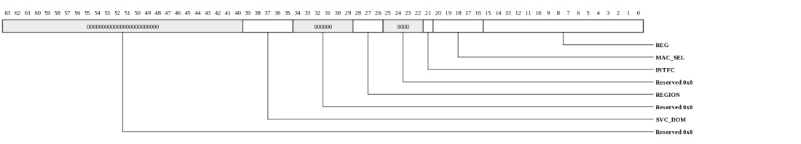
| Bits | Name | Type | Reset | Description
| 39:35 | SVC_DOM | RW | 0 | This field of the address indexes the 32 entry service domain table. | 28:26 | REGION | RW | 0 | This field of the address selects the region (address space) to be accessed. For the config region, this field must be 0. | 21 | INTFC | RW | 0 | Interface being accessed. |
20:16 | MAC_SEL | RW | 0 | Selects the MAC being accessed when bit[21] is 1. | 15:0 | REG | RW | 0 | Register address. | |
|---|
MMIO Configuration Region Value (MPIPE_CFG_REGION_VAL: 0x0000-0x3fffff)
A value written to an address of the form CFG_REGION_ADDR. Specific registers provide particular bitfields described by the other declarations in this file.
| Bits | Name | Type | Reset | Description
| 63:0 | DATA | RW | 0 | Configuration read/write data | |
|---|
MMIO Ingress DMA Release Region Address (MPIPE_IDMA_RELEASE_REGION_ADDR: 0x10000000-0x13ffffff)
This is a description of the physical addresses used to manipulate ingress credit counters. Accesses to this address space should use an address of this form and a value like that specified in IDMA_RELEASE_REGION_VAL.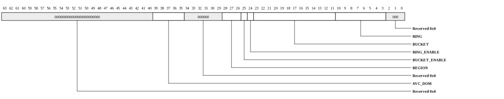
| Bits | Name | Type | Reset | Description
| 39:35 | SVC_DOM | RW | 0 | This field of the address indexes the 32 entry service domain table. | 28:26 | REGION | RW | 0 | This field of the address selects the region (address space) to be accessed. For the iDMA release region, this field must be 4. | 25 | BUCKET_ENABLE | RW | 0 | Enable Bucket release | 24 | RING_ENABLE | RW | 0 | Enable NotifRing release | 23:11 | BUCKET | RW | 0 | Bucket to be released | 10:3 | RING | RW | 0 | NotifRing to be released | |
|---|
MMIO Ingress DMA Release Region Value - Release NotifRing and/or Bucket (MPIPE_IDMA_RELEASE_REGION_VAL: 0x10000000-0x13ffffff)
Provides release of the associated NotifRing. The address of the MMIO operation is described in IDMA_RELEASE_REGION_ADDR.| Bits | Name | Type | Reset | Description
| 15:0 | COUNT | WO | 0 | Number of packets being released. The load balancer's count of inflight packets will be decremented by this amount for the associated Bucket and/or NotifRing | |
|---|
MMIO Egress DMA Post Region Address (MPIPE_EDMA_POST_REGION_ADDR: 0x14000000-0x17ffffff)
Used to post descriptor locations to the eDMA descriptor engine. The value to be written is described in EDMA_POST_REGION_VAL| Bits | Name | Type | Reset | Description
| 39:35 | SVC_DOM | RW | 0 | This field of the address indexes the 32 entry service domain table. | 28:26 | REGION | RW | 0 | This field of the address selects the region (address space) to be accessed. For the egress DMA post region, this field must be 5. | 8:3 | RING | RW | 0 | eDMA ring being accessed | |
|---|
MMIO Egress DMA Post Region Value (MPIPE_EDMA_POST_REGION_VAL: 0x14000000-0x17ffffff)
Used to post descriptor locations to the eDMA descriptor engine. The address is described in EDMA_POST_REGION_ADDR.
| Bits | Name | Type | Reset | Description
| 32 | GEN | RW | 0 | For writes, this specifies the generation number of the tail being posted. Note that if tail+cnt wraps to the beginning of the ring, the eDMA hardware assumes that the descriptors posted at the beginning of the ring are also valid so it is okay to post around the wrap point. | For reads, this is the current generation number. Valid descriptors will have the inverse of this generation number. 31:16 | COUNT | RW | 0 | For writes, this specifies number of contiguous descriptors that are being posted. Software may post up to RingSize descriptors with a single MMIO store. A zero in this field on a write will "wake up" an eDMA ring and cause it fetch descriptors regardless of the hardware's current view of the state of the tail pointer. | For reads, this field provides a rolling count of the number of descriptors that have been completely processed. This may be used by software to determine when buffers associated with a descriptor may be returned or reused. When the ring's flush bit is cleared by software (after having been set by HW or SW), the COUNT will be cleared. 15:0 | RING_IDX | RW | 0 | For writes, this specifies the current ring tail pointer prior to any post. For example, to post 1 or more descriptors starting at location 23, this would contain 23 (not 24). On writes, this index must be masked based on the ring size. The new tail pointer after this post is COUNT+RING_IDX (masked by the ring size). | For reads, this provides the hardware descriptor fetcher's head pointer. The descriptors prior to the head pointer, however, may not yet have been processed so this indicator is only used to determine how full the ring is and if software may post more descriptors. |
|---|
MMIO Buffer Stack Manager Region Address (MPIPE_BSM_REGION_ADDR: 0x18000000-0x1bffffff)
This MMIO region is used for posting or fetching buffers to/from the buffer stack manager. On an MMIO load, this pops a buffer descriptor from the top of stack if one is available. On an MMIO store, this pushes a buffer to the stack. The value read or written is described in BSM_REGION_VAL.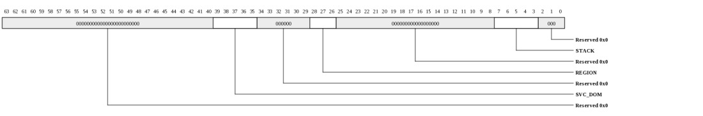
| Bits | Name | Type | Reset | Description
| 39:35 | SVC_DOM | RW | 0 | This field of the address indexes the 32 entry service domain table. | 28:26 | REGION | RW | 0 | This field of the address selects the region (address space) to be accessed. For the buffer stack manager region, this field must be 6. | 7:3 | STACK | RW | 0 | BufferStack being accessed. | |
|---|
MMIO Buffer Stack Manager Region Value (MPIPE_BSM_REGION_VAL: 0x18000000-0x1bffffff)
This MMIO region is used for posting or fetching buffers to/from the buffer stack manager. On an MMIO load, this pops a buffer descriptor from the top of stack if one is available. On an MMIO store, this pushes a buffer to the stack. The address of the MMIO operation is described in BSM_REGION_ADDR.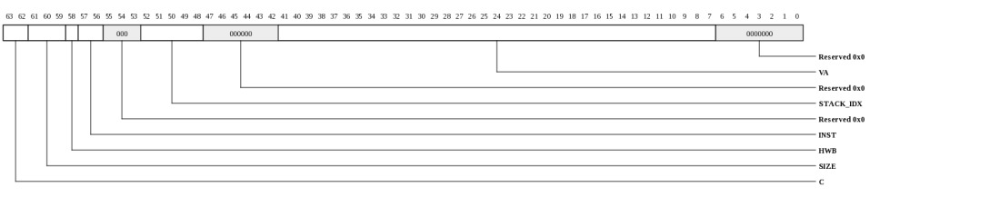
| Bits | Name | Type | Reset | Description
| 63:62 | C | RW | 0 | Valid indication for the buffer. Ignored on writes. | 0 : Valid buffer descriptor popped from stack. 3 : Could not pop a buffer from the stack. Either the stack is empty, or the hardware's prefetch buffer is empty for this stack. 61:59 | SIZE | RW | 0 | Encoded size of buffer (ignored on writes): | 0 = 128 bytes 1 = 256 bytes 2 = 512 bytes 3 = 1024 bytes 4 = 1664 bytes 5 = 4096 bytes 6 = 10368 bytes 7 = 16384 bytes 58 | HWB | RO | 1 | Reads as one to indicate that this is a hardware managed buffer. Ignored on writes since all buffers on a given stack are the same size. | 57:56 | INST | RO | 0 | Instance ID. For devices that support automatic buffer return between mPIPE instances, this field indicates the buffer owner. If the INST field does not match the mPIPE's instance number when a packet is egressed, buffers with HWB set will be returned to the other mPIPE instance. Note that not all devices support multi-mPIPE buffer return. The MPIPE_EDMA_INFO.REMOTE_BUFF_RTN_SUPPORT bit indicates whether the INST field in the buffer descriptor is populated by iDMA hardware. This field is ignored on writes. | 52:48 | STACK_IDX | RW | 0 | Index of the buffer stack to which this buffer belongs. Ignored on writes since the offset bits specify the stack being accessed. | 41:7 | VA | RW | 0 | Base virtual address of the buffer. Must be sign extended by consumer. | |
|---|
Register Definitions
Device Info (MPIPE_DEV_INFO: 0x0000)
This register provides general information about the device attached to this port and channel.
| Bits | Name | Type | Reset | Description
| 35:32 | INSTANCE | RO | HW | Instance ID for multi-instantiated devices. | 27:24 | REGISTER_REV | RO | 0 | Register format architectural revision. | 23:16 | DEVICE_REV | RO | HW | Device revision ID. | 11:0 | TYPE | RO | 013h | Encoded device Type - 19 to indicate MPIPE |
|
|---|
Device Control (MPIPE_DEV_CTL: 0x0008)
This register provides general device control.This register is protected at level 2
| Bits | Name | Type | Reset | Description
| 3 | SDN_ROUTE_ORDER | RW | 0 | When 1, packets sent on the SDN will be routed x-first. When 0, packets will be routed y-first. This setting must match the setting in the Tiles. Devices may have additional interfaces with customized route-order settings used in addition to or instead of this field. | 2 | RDN_ROUTE_ORDER | RW | 1 | When 1, packets sent on the RDN will be routed x-first. When 0, packets will be routed y-first. This setting must match the setting in the Tiles. Devices may have additional interfaces with customized route-order settings used in addition to or instead of this field. | |
|---|
MMIO Info (MPIPE_MMIO_INFO: 0x0010)
This register provides information about how the physical address is interpreted by the IO device. The PA is divided into {CHANNEL,SVC_DOM,IGNORED,REGION,OFFSET}. The values in this register define the size of each of these fields.
| Bits | Name | Type | Reset | Description
| 40:35 | REGION_WIDTH | RO | 3 | Size of the REGION field for this channel. The LSBs of the physical address are interpreted as {REGION,OFFSET} | 34:29 | OFFSET_WIDTH | RO | 26 | Size of the OFFSET field for this channel. The LSBs of the physical address are interpreted as {REGION,OFFSET} | 28:22 | NUM_SVC_DOM | RO | 32 | Number of service domains associated with this channel. | 21:19 | SVC_DOM_WIDTH | RO | 5 | Number of bits of service-domain specifier for this channel. The MSBs of the physical addrress are interpreted as {channel, service-domain} | 18:4 | NUM_CH | RO | 1 | Number of channels associated with this IO port. | 3:0 | CH_WIDTH | RO | 0 | Number of bits of channel specifier for all channels. The MSBs of the physical addrress are interpreted as {channel, service-domain} | |
|---|
Memory Info (MPIPE_MEM_INFO: 0x0018)
This register provides information about memory setup required for this device.
| Bits | Name | Type | Reset | Description
| 55:48 | NUM_TLB_ENT | RO | 16 | Number of IO TLB entries per ASID. | 47:40 | NUM_ASIDS | RO | 32 | Number of ASIDS supported if this device has an IO TLB (otherwise this field is zero). | 35:32 | NUM_HFH_TBL | RO | 6 | Number of hash-for-home tables that must be configured for this channel. | 31:0 | REQ_PORTS | RO | 32768 | Each bit represents a request (QDN) port on the tile fabric. Bit[15] represents the QDN port used for device configuration and is always set for devices implemented on channel-0. Bit[14] is the first port clockwise from the port used to access configuration space. Bit[13] is the second port in the clockwise direction. Bit[16] is the first port counter-clockwise from the port used to access configuration space. When a bit is set, the device has a QDN port at the associated location. For devices using a nonzero channel, this register may return all zeros. | |
|---|
Scratchpad (MPIPE_SCRATCHPAD: 0x0020)
Scratchpad
| Bits | Name | Type | Reset | Description
| 63:0 | SCRATCHPAD | RW | 0 | Scratchpad | |
|---|
Semaphore0 (MPIPE_SEMAPHORE0: 0x0028)
Semaphore
| Bits | Name | Type | Reset | Description
| 0 | VAL | RW | 0 | When read, the current semaphore value is returned and the semaphore is set to 1. Bit can also be written to 1 or 0. | |
|---|
Semaphore1 (MPIPE_SEMAPHORE1: 0x0030)
SemaphoreThis register is protected at level 1
| Bits | Name | Type | Reset | Description
| 0 | VAL | RW | 0 | When read, the current semaphore value is returned and the semaphore is set to 1. Bit can also be written to 1 or 0. | |
|---|
Clock Count (MPIPE_CLOCK_COUNT: 0x0038)
Clock Count
| Bits | Name | Type | Reset | Description
| 15:1 | COUNT | RO | 0 | Indicates the number of core clocks that were counted during 1000 device clock periods. Result is accurate to within +/-1 core clock periods. | 0 | RUN | RW | 0 | When 1, the counter is running. Cleared by HW once count is complete. When written with a 1, the count sequence is restarted. Counter runs automatically after reset. Software must poll until this bit is zero, then read the CLOCK_COUNT register again to get the final COUNT value. | |
|---|
MMIO HFH Table Init Control (MPIPE_HFH_INIT_CTL: 0x0050)
Initialization control for the hash-for-home tables. During initialization, all tables may be written simultaneously by setting STRUCT_SEL to ALL. If access to the tables is required after traffic is active on any of the interfaces, the tables must be accessed individually.This register is protected at level 2
| Bits | Name | Type | Reset | Description
| 18:16 | STRUCT_SEL | RW | 0 | HFH table to be accessed. |
6:0 | IDX | RW | 0 | Index into the HFH table to be accessed. Increments automatically on write or read to HFH_INIT_WDAT. Typically, all HFH tables will be programmed identically. | |
|---|
HFH Table Data (MPIPE_HFH_INIT_DAT: 0x0058)
Read/Write data for hash-for-home tableThis register is protected at level 2

| Bits | Name | Type | Reset | Description
| 22:15 | TILEA | RW | HW | Tile that is selected when the result of the hash_f function is greater than or equal to FRACT | 14:7 | TILEB | RW | HW | Tile that is selected when the result of the hash_f function is less than FRACT | 6:0 | FRACT | RW | HW | Fraction field of HFH table. Determines what portion of the address space maps to TileA vs TileB | |
|---|
Classifier Clock Control (MPIPE_KCLK_CONTROL: 0x0100)
NOTE: This register only exists in the following devices: Gx9 Gx16 Gx36 Gx72.Provides control over the classifier PLL. This PLL should be configured prior to enabling high-bandwidth traffic. When disabled, the classifier will operate at 125 MHz. The classifier must never be slower than 1/10th the pclk speed. To change the kclk frequency, the following procedure must be used:
- Write CLS_ENABLE.DISABLE with all 1's to temporarily disable new packets from being sent to the classifiers.
- Write the new PLL settings into this register
- MF to insure that write has completed
- Wait at least 100 ns to allow the clock control hardware to begin changing the PLL frequency and clear CLOCK_READY
- Poll CLOCK_READY until it is set
- Write CLS_ENABLE.ENABLE to reenable the classifiers.
This register is protected at level 2

| Bits | Name | Type | Reset | Description
| 31 | CLOCK_READY | RO | 0 | Indicates that PLL has been enabled and clock is now running off of the PLL output. | 20:13 | PLL_M | RW | 0 | Feedback divider value. The resulting clock frequency is calculated as ((REF / (PLL_N+1)) * 2 * (PLL_M + 1)) / (2^Q). The VCO frequency is (REF / (PLL_N+1)) * 2 * (PLL_M + 1)) and must be in the range of 2133 MHz to 4266 MHz. | For example, to create a 1 GHz clock from a 125 MHz refclk, Q would be set to 2 so that the VCO would be 1 GHz*2^2 = 4000 MHz. 2*(PLL_M+1)/(PLL_N+1) = 32. PLL_N=0 and PLL_M=15 would keep the post divide frequency within the legal range since 125/(0+1) is 125. PLL_RANGE would be set to R104_166. 12:7 | PLL_N | RW | 0 | Reference divider value. Input refclk is divided by (PLL_N+1). The post-divided clock must be in the range of 14 MHz to 200 MHz. The low 5 bits of this field are used. The MSB is reserved. The minimum value of PLL_N that keeps the post-divided clock within the legal range will provide the best jitter performance. | 6:4 | PLL_Q | RW | 0 | Output divider. The VCO clock is divided by 2^PLL_Q to create the final output clock. This should be set such that 2133 MHz<(output_frequency * 2^PLL_Q)<4266 MHz. The maximum supported value of PLL_Q is 6 (divide by 64). | 3:1 | PLL_RANGE | RW | 0 | This value should be set based on the post divider frequency, REF/(PLL_N+1). |
0 | ENA | RW | 0 | When written with a 1, the PLL will be configured with the settings in PLL_RANGE/Q/N/M. When written with a zero, the PLL will be bypassed. | |
|---|
Main Clock Control (MPIPE_PCLK_CONTROL: 0x0108)
NOTE: This register only exists in the following devices: Gx9 Gx16 Gx36 Gx72.Provides control over the MPIPE main PLL. Although this can be changed dynamically, this PLL should typically be configured prior to enabling high-bandwidth traffic. When disabled, the MPIPE will operate at 125 MHz. Note that while the clock is being changed from one frequency to another, it will park at 125 MHz while the PLL is locking. This can cause egress packet loss and TX_ERRs as well as ingress packet loss and MAC_ERRs due to the bandwidth mismatch between the MACs and mPIPE.
This register is protected at level 2

| Bits | Name | Type | Reset | Description
| 31 | CLOCK_READY | RO | 0 | Indicates that PLL has been enabled and clock is now running off of the PLL output. | 20:13 | PLL_M | RW | 0 | Feedback divider value. The resulting clock frequency is calculated as ((REF / (PLL_N+1)) * 2 * (PLL_M + 1)) / (2^Q). The VCO frequency is (REF / (PLL_N+1)) * 2 * (PLL_M + 1)) and must be in the range of 2133 MHz to 4266 MHz. | For example, to create a 1 GHz clock from a 125 MHz refclk, Q would be set to 2 so that the VCO would be 1 GHz*2^2 = 4000 MHz. 2*(PLL_M+1)/(PLL_N+1) = 32. PLL_N=0 and PLL_M=15 would keep the post divide frequency within the legal range since 125/(0+1) is 125. PLL_RANGE would be set to R104_166. 12:7 | PLL_N | RW | 0 | Reference divider value. Input refclk is divided by (PLL_N+1). The post-divided clock must be in the range of 14 MHz to 200 MHz. The low 5 bits of this field are used. The MSB is reserved. The minimum value of PLL_N that keeps the post-divided clock within the legal range will provide the best jitter performance. | 6:4 | PLL_Q | RW | 0 | Output divider. The VCO clock is divided by 2^PLL_Q to create the final output clock. This should be set such that 2133 MHz<(output_frequency * 2^PLL_Q)<4266 MHz. The maximum supported value of PLL_Q is 6 (divide by 64). | 3:1 | PLL_RANGE | RW | 0 | This value should be set based on the post divider frequency, REF/(PLL_N+1). |
0 | ENA | RW | 0 | When written with a 1, the PLL will be configured with the settings in PLL_RANGE/Q/N/M. When written with a zero, the PLL will be bypassed. | |
|---|
Classifier Clock Count (MPIPE_KCLK_COUNT: 0x0110)
Provides relative clock frequency between core (classifier-kclk) domain and device (pclk) clock domain.This register is protected at level 2

| Bits | Name | Type | Reset | Description
| 15:1 | COUNT | RO | 0 | Indicates the number of core clocks that were counted during 1000 device clock periods. Result is accurate to within +/-1 core clock periods. | 0 | RUN | RW | 0 | When 1, the counter is running. Cleared by HW once count is complete. When written with a 1, the count sequence is restarted. Counter runs automatically after reset. Software must poll until this bit is zero, then read the CLOCK_COUNT register again to get the final COUNT value. | |
|---|
MMIO Service Domain Configuration (MPIPE_MMIO_INIT_CTL: 0x0200)
Initialization control for the MMIO service domain tableThis register is protected at level 2
| Bits | Name | Type | Reset | Description
| 5:1 | SVC_DOM_IDX | RO | 0 | Selects service domain to be accessed. | 0 | REG | RO | 0 | Selects register to be accessed. Increments each time MMIO_INIT_DAT is read or written. The REG field overflows into SVC_DOM_IDX. However, if the number of registers per IDX is not a power of two, the MPIPE_MMIO_INIT_CTL register must be written each time a new set of registers is written. | |
|---|
MMIO service domain table data (MPIPE_MMIO_INIT_DAT: 0x0208)
Read/Write data for the service domain table. Each time this register is read or written, MPIPE_MMIO_INIT_CTL.REG is incremented. On increment, REG overflows into SVC_DOM_IDX so that both REGs and all SVC_DOM_IDX's can be read or written sequentially.This register is protected at level 2

| Bits | Name | Type | Reset | Description
| 63:0 | DAT | RO | 0 | Service domain table data. Contents may be either MMIO_INIT_DAT_0 or MMIO_INIT_DAT_1, depending on the IDX value in MMIO_INIT_CTL. | |
|---|
MMIO service domain table data - low word (MPIPE_MMIO_INIT_DAT_GX36_0: 0x0208)
NOTE: This register only exists in the following devices: Gx9 Gx16 Gx36 Gx72.Read/Write data for the service domain table. Each time this register is read or written, MPIPE_MMIO_INIT_CTL.IDX is incremented. Each entry consists of two words, addressed by MMIO_INIT_CTL.REG. Each bit in an entry corresponds to a service or set of services. A set bit allows access to that service for MMIO accesses that address this service domain table entry.
This register is protected at level 2
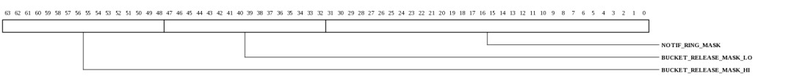
| Bits | Name | Type | Reset | Description
| 63:48 | BUCKET_RELEASE_MASK_HI | RW | ffffh | Each bit corresponds to a set of 4 contiguous buckets from the upper 64 buckets. The low 4096 buckets are protected by the BUCKETS_LO field in MMIO_INIT_DAT_IDX_0. When an MMIO BucketRelease is received, the MSB of the IDMA_RELEASE_REGION_ADDR.BUCKET field determines if the BUCKETS_LO or BUCKETS_HI field is used for protection. If that bit is one, then 4 bits starting at IDMA_RELEASE_REGION_ADDR.BUCKET[2] index this field. | 47:32 | BUCKET_RELEASE_MASK_LO | RW | ffffh | Each bit corresponds to a set of 256 contiguous buckets from the low 4096 buckets. The upper 64 buckets are protected by the BUCKETS_HI field in MMIO_INIT_DAT_IDX_1. When an MMIO BucketRelease is received, the MSB of the IDMA_RELEASE_REGION_ADDR.BUCKET field determines if the BUCKETS_LO or BUCKETS_HI field is used for protection. If that bit is zero, the next 4 bits index this field. | 31:0 | NOTIF_RING_MASK | RW | ffffffffh | NotifRing Release Sets. Each bit corresponds to a set of 8 contiguous NotifRings. When an MMIO NotifRing release is received, the upper 5 of the IDMA_RELEASE_REGION_ADDR.RING index into this vector. | |
|---|
MMIO service domain table data - high word (MPIPE_MMIO_INIT_DAT_GX36_1: 0x0208)
NOTE: This register only exists in the following devices: Gx9 Gx16 Gx36 Gx72.Read/Write data for the service domain table. Each time this register is read or written, MPIPE_MMIO_INIT_CTL.IDX is incremented. Each entry consists of two words, addressed by MMIO_INIT_CTL.REG. Each bit in an entry corresponds to a service or set of services. A set bit allows access to that service for MMIO accesses that address this service domain table entry.
This register is protected at level 2
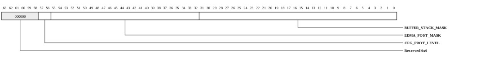
| Bits | Name | Type | Reset | Description
| 57:56 | CFG_PROT_LEVEL | RW | 3 | This field indicates the maximum protection level allowed for configuration access. 2/3 allows access to all registers. 1 blocks access to level 2. 0 blocks access to levels 1 and 2. | 55:32 | EDMA_POST_MASK | RW | ffffffh | Each bit corresponds to an eDMA Ring. | 31:0 | BUFFER_STACK_MASK | RW | ffffffffh | Each bit corresponds to a buffer stack. | |
|---|
iMesh Interface Controls (MPIPE_MESH_INTFC_CTL: 0x0300)
Thresholds for packet interfaces to iMeshThis register is protected at level 2
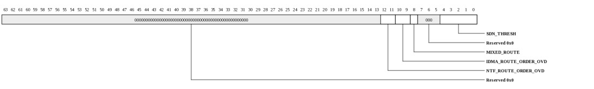
| Bits | Name | Type | Reset | Description
| 12:11 | NTF_ROUTE_ORDER_OVD | RW | 0 | Indicates route order override mode for NotifRing write traffic |
10:9 | IDMA_ROUTE_ORDER_OVD | RW | 0 | Indicates route order override mode for iDMA write traffic |
8 | MIXED_ROUTE | RW | 0 | When 0, SDN packets will be routed through the mesh based on the route order specified in the ROUTE_ORDER_OVD/DEV_CTL registers. When 1, the order will be determined on a per-packet basis based on PA[6]. This mode helps to reduce congestion and hot-spotting in the mesh. | 4:0 | SDN_THRESH | RW | 5 | Number of packet flits required in SDN synchronization FIFOs before packet is sent. Smaller values optimize latency but could introduce bandwidth-wasting bubbles on the network. | |
|---|
MAC Info (MPIPE_MAC_INTFC_INFO: 0x0500)
Constants related to the MAC interfaces connected to this MPIPE instance.This register is protected at level 2
| Bits | Name | Type | Reset | Description
| 23:16 | FIRST_LOOPBACK_CH | RO | 28 | Channel number for first loopback channel. Additional loopback channels are mapped to subsequent channel numbers. | 15:8 | NUM_LOOPBACK_CH | RO | 4 | Number of loopback channels. | 7:0 | NUM_MACS | RO | 32 | Number of physical MACs that may be connected to this MPIPE instance. Each MAC provides a MAC_INFO register in its MAC configuration space at offset 0x0000 containing channel information and type. Some devices may support fewer MACs. A disabled/unusable MAC will be reflected in the MAC's MAC_INFO register. Additionally, devices may have physical limitations on which MACs may be active simultaneously. | |
|---|
iDMA Info (MPIPE_IDMA_INFO: 0x0508)
Constants related to the ingress DMA interface.This register is protected at level 2
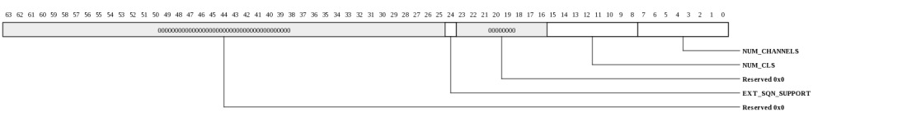
| Bits | Name | Type | Reset | Description
| 24 | EXT_SQN_SUPPORT | RO | HW | Support for 32-bit GP_SQN field in packet descriptors, enabled by IDMA_CTL.EXT_SQN. | 15:8 | NUM_CLS | RO | 0 | Number of classifiers. For MPIPE_DEVICE_INFO.DEVICE_REV=1, this indicates the maximum number of classifiers although some devices may contain fewer available classifiers as shown in the associated IO_DISABLE register in the RSHIM. For other DEVICE_REV's, this field indicates the number of available classifiers. | 7:0 | NUM_CHANNELS | RO | 32 | Number of ingress channels supported. | |
|---|
Load Balancer Info (MPIPE_LBL_INFO: 0x0510)
Constants related to the load balancer.This register is protected at level 2
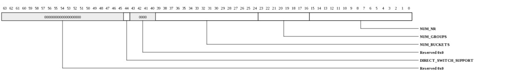
| Bits | Name | Type | Reset | Description
| 44 | DIRECT_SWITCH_SUPPORT | RO | HW | Packets may be switched directly to an eDMA ring. | 39:24 | NUM_BUCKETS | RO | 4160 | Number of buckets. | 23:16 | NUM_GROUPS | RO | 32 | Number of NotifGroups. | 15:0 | NUM_NR | RO | 256 | Number of NotifRings supported. | |
|---|
eDMA Info (MPIPE_EDMA_INFO: 0x0518)
Constants related to eDMA.This register is protected at level 2
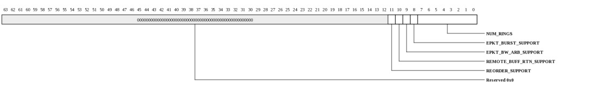
| Bits | Name | Type | Reset | Description
| 11 | REORDER_SUPPORT | RO | HW | Egress descriptors may choose output port thus supporting packet reorder system architecture. | 10 | REMOTE_BUFF_RTN_SUPPORT | RO | HW | Buffers may be returned to another mPIPE instance on egress. | 9 | EPKT_BW_ARB_SUPPORT | RO | HW | Egress arbitration logic supports per-ring bandwidth arbitration. If this feature is present, it is programmable through the MPIPE_EDMA_RG_INIT_DAT_THRESH register. | 8 | EPKT_BURST_SUPPORT | RO | HW | Egress arbitration logic supports bursts, typically used for Interlaken ports. If this feature is present, it is programmable through the MPIPE_EDMA_RG_INIT_DAT_THRESH.BURST register. | 7:0 | NUM_RINGS | RO | 64 | Number of eDMA rings supported. | |
|---|
Error Status (MPIPE_ERROR_STATUS: 0x0600)
Indicators for various fatal and non-fatal MPIPE error conditionsThis register is protected at level 2

| Bits | Name | Type | Reset | Description
| 0 | MMIO_ILL_OPC | W1TC | 0 | Illegal opcode received on MMIO interface | |
|---|
MMIO Error Information (MPIPE_MMIO_ERROR_INFO: 0x0608)
Provides diagnostics information when an MMIO error occurs. Captured whenever the MMIO_ERR interrupt condition occurs which includes size errors, read/write errors, and service domain protection errors. This does not update on config protection errors.This register is protected at level 2

| Bits | Name | Type | Reset | Description
| 56:52 | OPC | RO | 0 | NOTE: This field only exists in the following devices: Gx9 Gx16 Gx36 Gx72. | Opcode of request. MMIO supports only MMIO_READ (0x0e) and MMIO_WRITE (0x0f). All others are reserved and will only occur on a misconfigured TLB. 51:12 | PA | RO | 0 | NOTE: This field only exists in the following devices: Gx9 Gx16 Gx36 Gx72. | Full PA from request. 11:8 | SIZE | RO | 0 | NOTE: This field only exists in the following devices: Gx9 Gx16 Gx36 Gx72. | Request size. 0=1B, 1=2B, 2=4B, 3=8B, 4=16B, 5=32B, 6=48B, 7=64B. MMIO operations to MPIPE must always be 8 bytes. 7:0 | SRC | RO | 0 | NOTE: This field only exists in the following devices: Gx9 Gx16 Gx36 Gx72. | Source Tile in {x[3:0],y[3:0]} format. |
|---|
TLB iDMA Exception (MPIPE_TLB_IDMA_EXC: 0x0610)
Captures exception information on iDMA TLB misses. On an iDMA TLB miss, the DMA engine will stall. Software must provide a valid translation or set the DISC_ON_FAULT mode in the MPIPE_IDMA_CTL register to allow the DMA engine to make forward progress.This register is protected at level 2

| Bits | Name | Type | Reset | Description
| 52:48 | ASID | RO | 0 | Contains the ASID (buffer stack index) for the last miss. | 41:12 | VA | RO | 0 | Contains the virtual address for the last miss. | 3:0 | LRU | RO | 0 | Contains the suggested replacement pointer for filling a new TLB entry. | |
|---|
TLB eDMA Exception (MPIPE_TLB_EDMA_EXC: 0x0618)
Captures exception information on edma TLB misses. On an eDMA TLB miss, the ring generating the miss will be frozen. Software must provide a valid translation and restart the ring.This register is protected at level 2
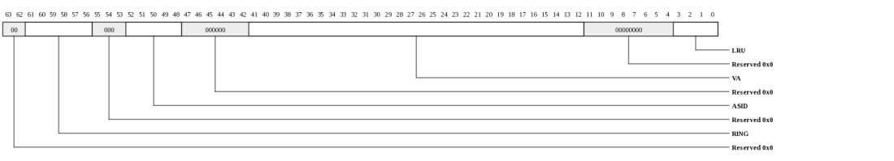
| Bits | Name | Type | Reset | Description
| 61:56 | RING | RO | 0 | Contains the eDMA ring for the last miss. | 52:48 | ASID | RO | 0 | Contains the ASID (buffer stack index) for the last miss. | 41:12 | VA | RO | 0 | Contains the virtual address for the last miss. | 3:0 | LRU | RO | 0 | Contains the suggested replacement pointer for filling a new TLB entry. | |
|---|
MAC Map (MPIPE_MAC0_MAP: 0x0700)
This register provides the channel mapping for SGMII Port 0.This register is protected at level 2

| Bits | Name | Type | Reset | Description
| 31:0 | CHANNELS | RO | 00000001h | Indicates which channel(s) are associated with this MAC. This mapping is fixed in hardware. Some MACs may share channels in cases where the two MACs cannot be physically active at the same time (e.g. they may share pins or SERDES lanes). Each bit represents a channel assigned to the associated MAC. | |
|---|
MAC Map (MPIPE_MAC1_MAP: 0x0708)
This register provides the channel mapping for SGMII Port 1.This register is protected at level 2

| Bits | Name | Type | Reset | Description
| 31:0 | CHANNELS | RO | 00000002h | Indicates which channel(s) are associated with this MAC. This mapping is fixed in hardware. Some MACs may share channels in cases where the two MACs cannot be physically active at the same time (e.g. they may share pins or SERDES lanes). Each bit represents a channel assigned to the associated MAC. | |
|---|
MAC Map (MPIPE_MAC2_MAP: 0x0710)
This register provides the channel mapping for SGMII Port 2.This register is protected at level 2

| Bits | Name | Type | Reset | Description
| 31:0 | CHANNELS | RO | 00000004h | Indicates which channel(s) are associated with this MAC. This mapping is fixed in hardware. Some MACs may share channels in cases where the two MACs cannot be physically active at the same time (e.g. they may share pins or SERDES lanes). Each bit represents a channel assigned to the associated MAC. | |
|---|
MAC Map (MPIPE_MAC3_MAP: 0x0718)
This register provides the channel mapping for SGMII Port 3.This register is protected at level 2

| Bits | Name | Type | Reset | Description
| 31:0 | CHANNELS | RO | 00000008h | Indicates which channel(s) are associated with this MAC. This mapping is fixed in hardware. Some MACs may share channels in cases where the two MACs cannot be physically active at the same time (e.g. they may share pins or SERDES lanes). Each bit represents a channel assigned to the associated MAC. | |
|---|
MAC Map (MPIPE_MAC4_MAP: 0x0720)
This register provides the channel mapping for XAUI Port 0.This register is protected at level 2

| Bits | Name | Type | Reset | Description
| 31:0 | CHANNELS | RO | 00000001h | Indicates which channel(s) are associated with this MAC. This mapping is fixed in hardware. Some MACs may share channels in cases where the two MACs cannot be physically active at the same time (e.g. they may share pins or SERDES lanes). Each bit represents a channel assigned to the associated MAC. | |
|---|
MAC Map (MPIPE_MAC5_MAP: 0x0728)
This register provides the channel mapping for SGMII Port 4.This register is protected at level 2

| Bits | Name | Type | Reset | Description
| 31:0 | CHANNELS | RO | 00000010h | Indicates which channel(s) are associated with this MAC. This mapping is fixed in hardware. Some MACs may share channels in cases where the two MACs cannot be physically active at the same time (e.g. they may share pins or SERDES lanes). Each bit represents a channel assigned to the associated MAC. | |
|---|
MAC Map (MPIPE_MAC6_MAP: 0x0730)
This register provides the channel mapping for SGMII Port 5.This register is protected at level 2

| Bits | Name | Type | Reset | Description
| 31:0 | CHANNELS | RO | 00000020h | Indicates which channel(s) are associated with this MAC. This mapping is fixed in hardware. Some MACs may share channels in cases where the two MACs cannot be physically active at the same time (e.g. they may share pins or SERDES lanes). Each bit represents a channel assigned to the associated MAC. | |
|---|
MAC Map (MPIPE_MAC7_MAP: 0x0738)
This register provides the channel mapping for SGMII Port 6.This register is protected at level 2

| Bits | Name | Type | Reset | Description
| 31:0 | CHANNELS | RO | 00000040h | Indicates which channel(s) are associated with this MAC. This mapping is fixed in hardware. Some MACs may share channels in cases where the two MACs cannot be physically active at the same time (e.g. they may share pins or SERDES lanes). Each bit represents a channel assigned to the associated MAC. | |
|---|
MAC Map (MPIPE_MAC8_MAP: 0x0740)
This register provides the channel mapping for SGMII Port 7.This register is protected at level 2

| Bits | Name | Type | Reset | Description
| 31:0 | CHANNELS | RO | 00000080h | Indicates which channel(s) are associated with this MAC. This mapping is fixed in hardware. Some MACs may share channels in cases where the two MACs cannot be physically active at the same time (e.g. they may share pins or SERDES lanes). Each bit represents a channel assigned to the associated MAC. | |
|---|
MAC Map (MPIPE_MAC9_MAP: 0x0748)
This register provides the channel mapping for XAUI Port 1.This register is protected at level 2

| Bits | Name | Type | Reset | Description
| 31:0 | CHANNELS | RO | 00000010h | Indicates which channel(s) are associated with this MAC. This mapping is fixed in hardware. Some MACs may share channels in cases where the two MACs cannot be physically active at the same time (e.g. they may share pins or SERDES lanes). Each bit represents a channel assigned to the associated MAC. | |
|---|
MAC Map (MPIPE_MAC10_MAP: 0x0750)
This register provides the channel mapping for SGMII Port 8.This register is protected at level 2

| Bits | Name | Type | Reset | Description
| 31:0 | CHANNELS | RO | 00000100h | Indicates which channel(s) are associated with this MAC. This mapping is fixed in hardware. Some MACs may share channels in cases where the two MACs cannot be physically active at the same time (e.g. they may share pins or SERDES lanes). Each bit represents a channel assigned to the associated MAC. | |
|---|
MAC Map (MPIPE_MAC11_MAP: 0x0758)
This register provides the channel mapping for SGMII Port 9.This register is protected at level 2

| Bits | Name | Type | Reset | Description
| 31:0 | CHANNELS | RO | 00000200h | Indicates which channel(s) are associated with this MAC. This mapping is fixed in hardware. Some MACs may share channels in cases where the two MACs cannot be physically active at the same time (e.g. they may share pins or SERDES lanes). Each bit represents a channel assigned to the associated MAC. | |
|---|
MAC Map (MPIPE_MAC12_MAP: 0x0760)
This register provides the channel mapping for SGMII Port 10.This register is protected at level 2

| Bits | Name | Type | Reset | Description
| 31:0 | CHANNELS | RO | 00000400h | Indicates which channel(s) are associated with this MAC. This mapping is fixed in hardware. Some MACs may share channels in cases where the two MACs cannot be physically active at the same time (e.g. they may share pins or SERDES lanes). Each bit represents a channel assigned to the associated MAC. | |
|---|
MAC Map (MPIPE_MAC13_MAP: 0x0768)
This register provides the channel mapping for SGMII Port 11.This register is protected at level 2

| Bits | Name | Type | Reset | Description
| 31:0 | CHANNELS | RO | 00000800h | Indicates which channel(s) are associated with this MAC. This mapping is fixed in hardware. Some MACs may share channels in cases where the two MACs cannot be physically active at the same time (e.g. they may share pins or SERDES lanes). Each bit represents a channel assigned to the associated MAC. | |
|---|
MAC Map (MPIPE_MAC14_MAP: 0x0770)
This register provides the channel mapping for XAUI Port 2.This register is protected at level 2

| Bits | Name | Type | Reset | Description
| 31:0 | CHANNELS | RO | 00000100h | Indicates which channel(s) are associated with this MAC. This mapping is fixed in hardware. Some MACs may share channels in cases where the two MACs cannot be physically active at the same time (e.g. they may share pins or SERDES lanes). Each bit represents a channel assigned to the associated MAC. | |
|---|
MAC Map (MPIPE_MAC15_MAP: 0x0778)
This register provides the channel mapping for SGMII Port 12.This register is protected at level 2

| Bits | Name | Type | Reset | Description
| 31:0 | CHANNELS | RO | 00001000h | Indicates which channel(s) are associated with this MAC. This mapping is fixed in hardware. Some MACs may share channels in cases where the two MACs cannot be physically active at the same time (e.g. they may share pins or SERDES lanes). Each bit represents a channel assigned to the associated MAC. | |
|---|
MAC Map (MPIPE_MAC16_MAP: 0x0780)
This register provides the channel mapping for SGMII Port 13.This register is protected at level 2

| Bits | Name | Type | Reset | Description
| 31:0 | CHANNELS | RO | 00002000h | Indicates which channel(s) are associated with this MAC. This mapping is fixed in hardware. Some MACs may share channels in cases where the two MACs cannot be physically active at the same time (e.g. they may share pins or SERDES lanes). Each bit represents a channel assigned to the associated MAC. | |
|---|
MAC Map (MPIPE_MAC17_MAP: 0x0788)
This register provides the channel mapping for SGMII Port 14.This register is protected at level 2

| Bits | Name | Type | Reset | Description
| 31:0 | CHANNELS | RO | 00004000h | Indicates which channel(s) are associated with this MAC. This mapping is fixed in hardware. Some MACs may share channels in cases where the two MACs cannot be physically active at the same time (e.g. they may share pins or SERDES lanes). Each bit represents a channel assigned to the associated MAC. | |
|---|
MAC Map (MPIPE_MAC18_MAP: 0x0790)
This register provides the channel mapping for SGMII Port 15.This register is protected at level 2

| Bits | Name | Type | Reset | Description
| 31:0 | CHANNELS | RO | 00008000h | Indicates which channel(s) are associated with this MAC. This mapping is fixed in hardware. Some MACs may share channels in cases where the two MACs cannot be physically active at the same time (e.g. they may share pins or SERDES lanes). Each bit represents a channel assigned to the associated MAC. | |
|---|
MAC Map (MPIPE_MAC19_MAP: 0x0798)
This register provides the channel mapping for XAUI Port 3.This register is protected at level 2

| Bits | Name | Type | Reset | Description
| 31:0 | CHANNELS | RO | 00001000h | Indicates which channel(s) are associated with this MAC. This mapping is fixed in hardware. Some MACs may share channels in cases where the two MACs cannot be physically active at the same time (e.g. they may share pins or SERDES lanes). Each bit represents a channel assigned to the associated MAC. | |
|---|
Loopback Map (MPIPE_LOOPBACK_MAP: 0x0800)
Indicates which channels are used for loopback.This register is protected at level 2
| Bits | Name | Type | Reset | Description
| 31:0 | CHANNELS | RO | f0000000h | Each bit represents a channel assigned to the associated MAC. | |
|---|
MAC Enable (MPIPE_MAC_ENABLE: 0x0808)
Indicates which MACs are enabled. The system configuration may impose limits on which MACs may be simultaneously enabled. Violating these constraints will cause unpredictable behavior. See datasheet for legal MAC combinations.This register is protected at level 2
| Bits | Name | Type | Reset | Description
| 63:32 | AVAIL | RO | 0 | Each bit represents a MAC. When 1, the MAC may be used in the current system configuration. When 0, the MAC is not usable in this system (due to chip or package restrictions). | 31:0 | ENA | RW | 0 | Each bit represents a MAC. Setting the bit enables the MAC and any associated on-chip physical resources (PLLs, SERDES, IO pads etc.) | |
|---|
MAC Management (MPIPE_MAC_MANAGE: 0x0810)
Indicates which MACs are allowed to perform management tasks (e.g. MDIO). The driver for a port that shares a common management interface, such as shared MDIO pins, must coordinate with other drivers for access to the shared resource. If multiple ports with their MAC_MANGAGE.ENA bits set attempt simultaneous access to the management interface, the management operations will be corrupted. Some MACs sharing management pins may require that only one MAC_MANAGE bit be asserted at a time. Thus this register should typically have just one bit set per shared pin group.This register is protected at level 2
| Bits | Name | Type | Reset | Description
| 31:0 | ENA | RW | ffffffffh | Each bit represents a MAC. | |
|---|
iPkt Thresholds (MPIPE_IPKT_THRESH: 0x1000)
Thresholds for block utilization and cut-through in the iPkt bufferThis register is protected at level 2
| Bits | Name | Type | Reset | Description
| 54:44 | CLSQ_HWM | RW | 1023 | Number of headers in the classification queue at which the classifier is told to start dropping packets that exceed the allowable classification time (cycle budget). When set to all 1's, the cycle-budget will never be applied. When all 0's, the cycle budget will always be applied. The classification queue holds up to 1536 entries. | 43:32 | NUM_BLOCKS | RO | 1536 | Total number of 128-byte blocks in the iPkt buffer. | 6:0 | CUTTHROUGH | RW | 33 | Number of 128-byte blocks at which a packet is allowed to cut-through. Set to all 1's to never cut-through. For normal operation, should be set to (NUM_BLOCKS/2)/num-active-channels. This provides store-and-forward buffering for each channel without discards and truncations. Smaller numbers allow more iPkt buffer space to absorb hiccups in the Tile memory system. Larger values allow the classification program to know the exact packet size up to the threshold. Must never be smaller than 2 so that valid data is sent to the classifier. | |
|---|
Ingress Packet Sequence Number (MPIPE_IPKT_SQN: 0x1008)
Contains current value for the ingress packet sequence number.This register is protected at level 2
| Bits | Name | Type | Reset | Description
| 47:0 | VAL | RW | 0 | Current sequence number. Incremented by hardware when a packet descriptor is written to a notification ring. When the counter wraps, the IPKT_SQN_OVERFLOW interrupt may be dispatched. When software writes to this field, a simultaneous hardware increment due to an incoming packet descriptor will be ignored. Hence it is not common practice for software to modify this value in a running system. This sequence number is NOT incremented on DirectSwitch packets. | |
|---|
Ingress DMA Control (MPIPE_IDMA_CTL: 0x1010)
Controls behavior of the ingress DMA engine.This register is protected at level 2
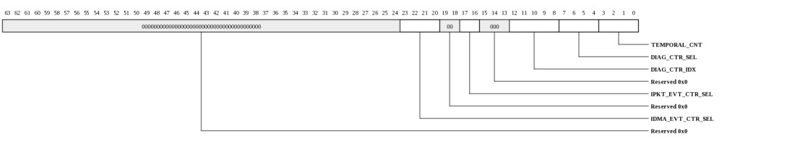
| Bits | Name | Type | Reset | Description
| 23:20 | IDMA_EVT_CTR_SEL | RW | 0 | Indicates which iDMA performance counter should be selected (one counter is shared amongst all IDMA_CTL.IDMA_EVT_CTR_SEL events). The counter is IDMA_STAT_CTR |
17:16 | IPKT_EVT_CTR_SEL | RW | 0 | Indicates which iPkt performance counter should be selected (one counter is shared amongst all IDMA_CTL.IPKT_EVT_CTR_SEL events). The counter is IPKT_STAT_CTR |
12:8 | DIAG_CTR_IDX | RW | 0 | Index into counter type being accessed. | 7:4 | DIAG_CTR_SEL | RW | 0 | Select set of internal counters to be read. The current value of the counter will be reflected in IDMA_STS.DIAG_CTR_VAL |
3:0 | TEMPORAL_CNT | RW | 2 | This register controls the starting cacheline at which the buffer stack's NonTemporal hint is used. For cachelines prior to TEMPORAL_CNT, the NonTemporal hint will be forced to zero indicating that the home Tile should install the line in its cache on a miss. For cachelines starting at TEMPORAL_CNT, the NonTemporal hint from the associated TLB entry will be used. | Setting this register to a non-zero value is useful when the packet data is generally NonTemporal (unlikely to be in cache by the time the program needs it) whereas the header is likely to be in cache. Padding due to the buffer offset and/or buffer chain pointer is counted as part of the cacheline. If the associated buffer stack's NonTemporal attribute is clear, this register will have no effect. If TEMPORAL_CNT is set larger than MPIPE.IPKT_THRESH, the writes from IPKT_THRESH to TEMPORAL_CNT may or may not use the buffer stack's NonTemporal hint. |
|---|
iDMA Status (MPIPE_IDMA_STS: 0x1018)
iDMA statusThis register is protected at level 1
| Bits | Name | Type | Reset | Description
| 10:0 | DIAG_CTR_VAL | RO | 0 | Contains the value of the counter being accessed by DIAG_CTR_SEL/IDX. | |
|---|
iDMA NotifWrite Latency (MPIPE_IDMA_NTF_LAT: 0x1020)
Provides random sample and record of iDMA descriptor write latencyThis register is protected at level 1

| Bits | Name | Type | Reset | Description
| 48 | CLEAR | WO | 0 | When written with a 1, sets MAX_LAT to zero and MIN_LAT to all 1's. | 46:32 | CURR_LAT | RO | 0 | Contains latency of the most recently sampled transaction. | 30:16 | MAX_LAT | RO | 0 | Contains maximum latency since last clear. | 14:0 | MIN_LAT | RO | 7fffh | Contains minimum latency since last clear. | |
|---|
iDMA Data Latency (MPIPE_IDMA_DAT_LAT: 0x1028)
Provides random sample and record of iDMA data write latencyThis register is protected at level 1

| Bits | Name | Type | Reset | Description
| 48 | CLEAR | WO | 0 | When written with a 1, sets MAX_LAT to zero and MIN_LAT to all 1's. | 46:32 | CURR_LAT | RO | 0 | Contains latency of the most recently sampled transaction. | 30:16 | MAX_LAT | RO | 0 | Contains maximum latency since last clear. | 14:0 | MIN_LAT | RO | 7fffh | Contains minimum latency since last clear. | |
|---|
iPKT Stats Counter (MPIPE_IPKT_STAT_CTR: 0x1030)
Provides count of event selected by IDMA_CTL.IPKT_EVT_CTR_SEL with read-to-clear functionalityThis register is protected at level 1

| Bits | Name | Type | Reset | Description
| 31:0 | VAL | RW | 0 | Contains the value of the counter being accessed by IDMA_CTL.IPKT_EVT_CTR_SEL. Saturates at all 1's. Clears on read. IPKT_CTR Interrupt is asserted when value reaches 0xFFFFFFFF. | |
|---|
iPKT Stats Counter (MPIPE_IPKT_STAT_CTR_RD: 0x1038)
Provides count of event selected by IDMA_CTL.IPKT_EVT_CTR_SELThis register is protected at level 1

| Bits | Name | Type | Reset | Description
| 31:0 | VAL | RO | 0 | Contains the value of the counter being accessed by IDMA_CTL.IPKT_EVT_CTR_SEL. Saturates at all 1's. IPKT_CTR Interrupt is asserted when value reaches 0xFFFFFFFF. | |
|---|
iDMA Stats Counter (MPIPE_IDMA_STAT_CTR: 0x1040)
Provides count of event selected by IDMA_CTL.IDMA_EVT_CTR_SEL with read-to-clear functionality.This register is protected at level 1

| Bits | Name | Type | Reset | Description
| 31:0 | VAL | RW | 0 | Contains the value of the counter being accessed by IDMA_CTL.IDMA_EVT_CTR_SEL. Saturates at all 1's. Clears on read. IDMA_CTR Interrupt is asserted when value reaches 0xFFFFFFFF. | |
|---|
iDMA Stats Counter (MPIPE_IDMA_STAT_CTR_RD: 0x1048)
Provides count of event selected by IDMA_CTL.IDMA_EVT_CTR_SELThis register is protected at level 1

| Bits | Name | Type | Reset | Description
| 31:0 | VAL | RO | 0 | Contains the value of the counter being accessed by IDMA_CTL.IDMA_EVT_CTR_SEL. Saturates at all 1's. IDMA_CTR Interrupt is asserted when value reaches 0xFFFFFFFF. | |
|---|
Timestamp Value (MPIPE_TIMESTAMP_VAL: 0x1050)
Current timestamp value measured in seconds and nanoseconds. The timestamp may be written by software or adjusted using the TIMESTAMP_NS_ADJ register.This register is protected at level 2
| Bits | Name | Type | Reset | Description
| 63:32 | SEC | RW | 0 | Timestamp seconds value. Incremented when NS reaches 1e9. Also may be written directly or incremented/decremented based on TIMESTAMP_ADJ. | 29:0 | NS | RW | 0 | Timestamp nanoseconds value. Updated based on TIMESTAMP_CAL.RES count and TIMESTAMP_CAL.THR registers. Also may be directly written. Also may be adjusted with the TIMESTAMP_NS_ADJ register. Wraps back to zero at 1e9 NS. | |
|---|
Timestamp Nanoseconds Adjust (MPIPE_TIMESTAMP_NS_ADJ: 0x1058)
Provides adjustment of the timestamp nanoseconds value.This register is protected at level 2
| Bits | Name | Type | Reset | Description
| 30:0 | VAL | WO | 0 | Timestamp adjustment value. When written, this 31-bit signed value will be added to the TIMESTAMP_VAL.NS field to provide up to 1 second of positive or negative adjustment. | |
|---|
Timestamp Calibration (MPIPE_TIMESTAMP_CAL: 0x1060)
Residue and threshold counters for timestamp to allow calibration of the local clock to nanosecond granularity. The ratio of INC to THR provides the conversion from the local clock period to nanoseconds. Whenever this register is written, the TIMESTAMP_RES register must subsequently be written to zero to make the change take place immediately. Otherwise, the timestamp might take as long as 16535 cycles to stabilize.This register is protected at level 2
| Bits | Name | Type | Reset | Description
| 47:32 | INC | RW | 2918h | Residue increment amount. Note that INC must be less than or equal to 2*THR. Otherwise the timestamp will not properly count nanoseconds. In practice, this means that clocks slower than 500 MHz must count larger intervals (e.g. use TIMESTAMP_VAL.NS to count 2-NS intervals and adjust software accordingly). | 15:0 | THR | RW | 2710h | Residue threshold. Indicates the value of RES at which the TIMESTAM_VAL.NS will be incremented. | |
|---|
Timestamp Residue Counter (MPIPE_TIMESTAMP_RES: 0x1068)
Residue counter. Increments by TIMESTAMP_CAL.INC each cycle. When TIMESTAMP_RES+TIMESTAMP_CAL.INC >= TIMESTAMP_CAL.THR, TIMESTAMP_VAL.NS will increment and the RES will wrap back to RES+INC-THR. This register should be written to zero after any changes to teh INC/THR values.This register is protected at level 2
| Bits | Name | Type | Reset | Description
| 16:0 | TIMESTAMP_RES | RW | 0 | Residue counter. Increments by TIMESTAMP_CAL.INC each cycle. When TIMESTAMP_RES+TIMESTAMP_CAL.INC >= TIMESTAMP_CAL.THR, TIMESTAMP_VAL.NS will increment and the RES will wrap back to RES+INC-THR. This register should be written to zero after any changes to teh INC/THR values. | |
|---|
Timestamp Residual Adjust (MPIPE_TIMESTAMP_RES_ADJ: 0x1070)
Provides temporary adjustment of the residual value.This register is protected at level 2
| Bits | Name | Type | Reset | Description
| 47:32 | CNT | RW | 0 | Number of cycles to apply the TMP_THR threshold. Decrements by one each cycle. | 15:0 | TMP_THR | RW | 0 | Temporary THR value to be used while CNT is nonzero | |
|---|
Priority Pause Threshold Registers (MPIPE_PR_PAUSE_THR: 0x1080-0x10bf)
Thresholds for generating priority queue pause based on iPkt buffer occupancy. Each register contains 4 thresholds. There are 8 registers containing the thresholds for the 32 priority queues. The thresholds are in units of 128-byte blocks. This value must not be modified while packets are inflight for the associated queue.This register is protected at level 2
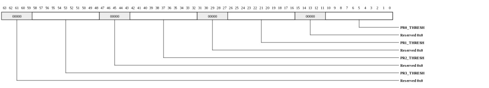
| Bits | Name | Type | Reset | Description
| 58:48 | PR3_THRESH | RW | 180 | Threshold associated with priority-queue-(REG_NUM * 4 + 3) | 42:32 | PR2_THRESH | RW | 180 | Threshold associated with priority-queue-(REG_NUM * 4 + 2) | 26:16 | PR1_THRESH | RW | 180 | Threshold associated with priority-queue-(REG_NUM * 4 + 1) | 10:0 | PR0_THRESH | RW | 180 | Threshold associated with priority-queue-(REG_NUM * 4 + 0) | |
|---|
Classifier Init Control (MPIPE_CLS_INIT_CTL: 0x2000)
Initialization control for the classifier data structures (instruction-memory, table, registers)This register is protected at level 2
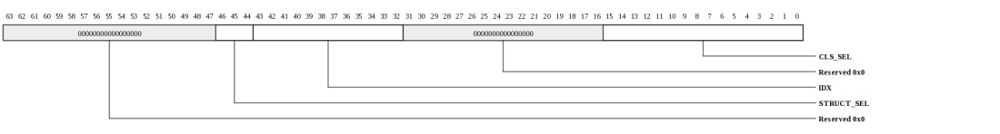
| Bits | Name | Type | Reset | Description
| 46:44 | STRUCT_SEL | RW | 0 | Structure to be written. |
43:32 | IDX | RW | 0 | Index into structure to be written. Increments automatically on write or read to the CLS_INIT_WDAT | 15:0 | CLS_SEL | RW | 0 | Each bit represents a classifier to be programmed. All classifiers can be programmed simultaneously by setting all bits to 1. | |
|---|
Classifier Init Data (MPIPE_CLS_INIT_WDAT: 0x2008)
Write data for classifier initialization (instruction-memory, table, registers). Note that the classifier instruction-memory, table, and register structures are write-only.This register is protected at level 2
| Bits | Name | Type | Reset | Description
| 31:0 | WDAT | RW | 0 | Write data for the structure configured in CLS_INIT_CTL. CLS_INIT_CTL.IDX increments automatically on each write or read. Also provides read data when the structure is set to SPR The classifier programmer structure (STRUCT_SEL=PGMR) is described in the mPIPE specification. | |
|---|
Classifier Init Data: Blast Command (MPIPE_CLS_INIT_WDAT_BLAST_RECORD_FORMAT: 0x2008)
The blast programmer writes a series of 'records' for classifier initialization. Each record starts with this header, followed by some number of data words. The use of this structure is described in the mPIPE specification.This register is protected at level 2
| Bits | Name | Type | Reset | Description
| 23:22 | SEL | RW | 0 | Selects the type of state to be written. |
21:11 | START_INDEX | RW | 0 | Index of the first instruction, table entry, or register value to be written. | 10:0 | DATA_COUNT | RW | 0 | The number of instructions, 16-bit table entries, or 16-bit register values that follow this header. Instructions are 32 bits each and consume an entire CLS_INIT_WDAT write; table and register values are 16 bits and packed two to a CLS_INIT_WDAT write. A 0 value is interpreted as 2048. | |
|---|
Classifier Enable and Configuration Control (MPIPE_CLS_ENABLE: 0x2010)
Enable bits and program control for the classifiersThis register is protected at level 2
| Bits | Name | Type | Reset | Description
| 48 | PGM_PND | RO | 0 | When asserted, flash-programming is still pending. This bit must be polled prior to issuing a new FLASH operation. | 47:32 | FLASH | WO | 0 | Each bit represents a classifier to be flashed. When written with a 1, the associated classifier(s) will be suspended at the next packet boundary and loaded with the program data stored in the programmer structure. After all associated classifiers have been programmed, they will resume normal operation. | 31:16 | DISABLE | WO | 0 | Each bit represents a classifier to be disabled. When written with a 1, the associated classifier be disabled and will stall at PC=0 after finishing processing of the current packet. | 15:0 | ENABLE | RW | 0 | Each bit represents a classifier to be enabled. The bit sets when written with a 1. To disable a classifier, write the associated bit in the DISABLE field. When clear, the associated classifier will stall at PC=0. The classifier's enable bit will be cleared by hardware if the classifier program writes to its freeze SPR. Some devices in the TileGx family don't support using all of the classifier processors. In this case, the associated ENABLE bit(s) won't be writable by software. | |
|---|
Classifier Control (MPIPE_CLS_CTL: 0x2018)
Control information for the classifiers.This register is protected at level 2
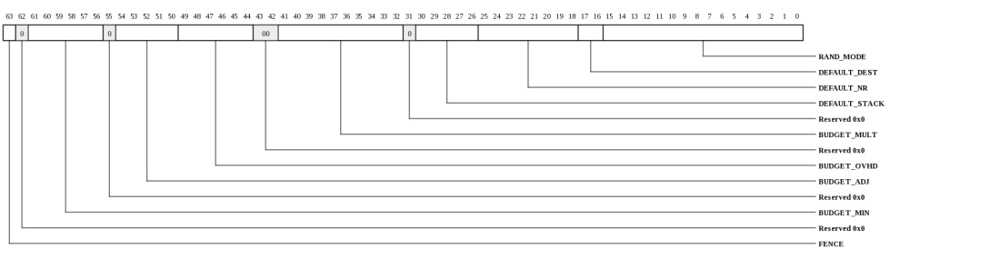
| Bits | Name | Type | Reset | Description
| 63 | FENCE | RW | 0 | When written with a 1, a fence is initiated. Hardware will clear this bit once all older descriptors have reached the load balancer. This is useful when reprogramming the classifier so that software can determine when all headers using the old classifier program have reached the load balancer. | 61:56 | BUDGET_MIN | RW | 60 | This field indicates the minimum L2 size. Packets smaller than this size are assumed to have been padded by the MAC to this size (e.g. have additional overhead not accounted for in BUDGET_OVHD) | 54:50 | BUDGET_ADJ | RW | 29 | This field indicates the number of cycles to be added or subtracted from the budget calculation to account for rounding and exception processing time. This number is signed. The budget exception takes 3 cycles to process, so this must be -3 or smaller to guarantee that line rate is achieved while exceptions are being generated. Setting can be zero or larger if software is using the budget for debug or does not need to guarantee line rate on over-budget flows. | 49:44 | BUDGET_OVHD | RW | 24 | This field indicates the number of overhead bytes for each packet including CRC, preamble and interframe gap. Any bytes not included in the L2_SIZE presented to the classifier should be included. This impacts the cycle budget as described in BUDGET_MULT. | 41:32 | BUDGET_MULT | RW | 393 | This field provides the cycle budget scaler typically based on the line rate of the system. A packet's budget is calculated as rounddown((min(size+OVHD,255)*BUDGET_MULT/128)+BUDGET_ADJ. This field is typically calculated as 128*NUM_CLASSIFIERS*classifier_freq(MHz)/line_rate(MBytes/sec). The reset values in this register varies by device. The reset value documented here corresponds to an example implementation with 16 classifiers operating at 1200MHz with a 50.0Gbps line rate. | 30:26 | DEFAULT_STACK | RW | 0 | Specifies the descriptor buffer STACK_IDX field when a classifier program is terminated due to exceeding its cycle budget | 25:18 | DEFAULT_NR | RW | 0 | Specifies the descriptor NOTIF_RING field when a classifier program is terminated due to exceeding its cycle budget | 17:16 | DEFAULT_DEST | RW | 0 | Specifies the descriptor DEST field when a classifier program is terminated due to exceeding its cycle budget |
15:0 | RAND_MODE | RW | 0 | When 1, the CLASSIFIER_RAND SPR's LFSR is free running for the associated classifier. When zero, it advances only on read | |
|---|
Load Balancer Initialization Control (MPIPE_LBL_INIT_CTL: 0x2100)
Initialization control for the load balancer data structures (bucket-status, groups, notif-rings). Note that all structures associated with any buckets that are going to be used MUST be initialized by software prior to packets entering the load balancer.This register is protected at level 2
| Bits | Name | Type | Reset | Description
| 17:16 | STRUCT_SEL | RW | 0 | Structure to be accessed. |
12:0 | IDX | RW | 0 | Index into structure to be accessed. Increments automatically on write or read to LBL_INIT_WDAT | |
|---|
Load Balancer Data (MPIPE_LBL_INIT_DAT: 0x2108)
Read/Write data for load balancer initialization (BucketSTS Table, NotifGroup Table, and NotifRing table)This register is protected at level 2

| Bits | Name | Type | Reset | Description
| 63:0 | DAT | RO | 0 | Data for the associated STRUCT_SEL. The LBL_INIT_DAT_* registers describe the formats for the GROUP_TBL, BSTS_TBL, NR_TBL_0, NR_TBL_1, and INFL_CNT. | |
|---|
Load Balancer Bucket Status Data (MPIPE_LBL_INIT_DAT_BSTS_TBL: 0x2108)
Read/Write data for load balancer Bucket-Status Table. 4160 entries indexed by LBL_INIT_CTL.IDX when LBL_INIT_CTL.STRUCT_SEL is BSTS_TBLThis register is protected at level 2
| Bits | Name | Type | Reset | Description
| 31:29 | MODE | RW | HW | Mode select for this bucket. |
28:24 | GROUP | RW | HW | Group associated with this bucket. | 23:8 | COUNT | RW | HW | Current reference count. | 7:0 | NOTIFRING | RW | HW | NotifRing currently assigned to this bucket. | |
|---|
Load Balancer Group Table Data (MPIPE_LBL_INIT_DAT_GROUP_TBL: 0x2108)
Read/Write data for load balancer Group Table. 256 sets of 4 entries each. Entries indexed by LBL_INIT_CTL.IDX when LBL_INIT_CTL.STRUCT_SEL is GROUP_TBL. Each set of 4 contiguous entries form a logical NotifGroup entry. The low two bits of LBL_INIT_CTL.IDX select which entry of the NotifGroup set is accessed.This register is protected at level 2
| Bits | Name | Type | Reset | Description
| 63:0 | NR_ENABLE | RW | HW | Each bit represents a NotifRing that is enabled to receive packets for this group. | |
|---|
Load Balancer NotifRing Table Low Half (MPIPE_LBL_INIT_DAT_NR_TBL_0: 0x2108)
NOTE: This register only exists in the following devices: Gx9 Gx16 Gx36 Gx72.Read/Write data for the NotifRing Table. NotifRing Table contains 256 entries divided into LO/HI based on the LSB of LBL_INIT_CTL.IDX. This structure is accessed when LBL_INIT_CTL.STRUCT_SEL is NR_TBL and the LSB of LBL_INIT_CTL.IDX is zero.
This register is protected at level 2
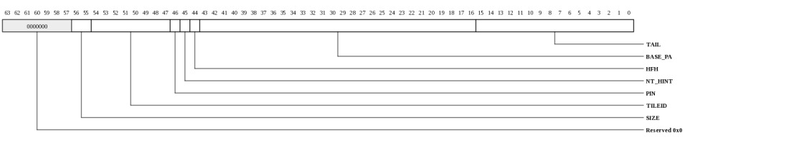
| Bits | Name | Type | Reset | Description
| 56:55 | SIZE | RW | HW | Ring Size. Note that the 1st 64-bytes of the ring is reserved for the HW-updated Tail pointer and the HW requires that the full threshold is set to N-1 so the actual number of packet descriptors that can be stored is RingSize-2. The setting in this field MUST match the setting in LBL_INIT_DAT_NR_TBL1.SIZE. |
54:47 | TILEID | RW | HW | HFH and TileID are typically programmed to match the associated PTE. When HFH is 1, the TileID contains the {mask,offset} pair used to access the HFH table. | 46 | PIN | RW | HW | When asserted, only the IO pinned ways in the home cache will be used. | 45 | NT_HINT | RW | HW | NonTemporal Hint. When set, writes to the NotifRing will tend to NOT displace cache blocks at the home Tile, but rather write directly to memory on a miss. The NT-hint bit is a performance hint to the cache system that the descriptor is not likely to be touched in a relatively short window of time. | 44 | HFH | RW | HW | Address space is hashed-for-home. | 43:16 | BASE_PA | RW | HW | 4 kB-aligned base PA for the NotifRing. Rings must be naturally aligned based on size so 1/3/5/10 LSBs of this register must be zero depending on the ring size. | 15:0 | TAIL | RW | HW | Current tail pointer (next NotifRing location to be written by hardware). For normal NotifRings (DS=0), software must initialize tail to 1 since entry 0 is reserved for the hardware-updated tail pointer copy. For rings in DirectSwitch mode (DS=1), software must initialize this field to 0. Note that this pointer is not coherent with the iDMA descriptor writes. It will update as soon as the descriptor has been written to Tile memory space but before the write is coherent. The tail pointer written to the NotifRing itself must be used as the coherent tail pointer. | |
|---|
Load Balancer NotifRing Table High Half (MPIPE_LBL_INIT_DAT_NR_TBL_1: 0x2108)
Read/Write data for the NotifRing Table. NotifRing Table contains 256 entries divided into LO/HI based on the LSB of LBL_INIT_CTL.IDX. This structure is accessed when LBL_INIT_CTL.STRUCT_SEL is NR_TBL and the LSB of LBL_INIT_CTL.IDX is one.This register is protected at level 2
| Bits | Name | Type | Reset | Description
| 17:16 | SIZE | RW | HW | Ring Size. Note that the 1st 64-bytes of the ring is reserved for the HW-updated Tail pointer and the HW requires that the full threshold is set to N-1 so the actual number of packet descriptors that can be stored is RingSize-2. The setting in this field MUST match the setting in LBL_INIT_DAT_NR_TBL0.SIZE. |
15:0 | COUNT | RW | HW | Current count of entries in the ring. Software typically initializes this field to zero. Hardware increments when each new descriptor is written to a ring and decrements when a NotifRing release is received. | |
|---|
Load Balancer NotifRing Inflight Count (MPIPE_LBL_INIT_DAT_INFL_CNT: 0x2108)
Read/Write data for load NotifRing Table. NotifRing Inflight Counters table contains 256 entries. This structure is accessed when LBL_INIT_CTL.STRUCT_SEL is INFL_CNT.This register is protected at level 2

| Bits | Name | Type | Reset | Description
| 10:0 | COUNT | RO | 0 | Current count of inflight entries for the associated NotifRing. Incremented each time the load balancer assigns a descriptor to the NotifRing. Decremented when the associated packet data has been dequeued from iPkt, the descriptor has been written to the NotifRing, the TailPointer update has completed, and the interrupt has been posted. This counter allows software to determine when a ring has been completely drained. Writes to this field are ignored. | |
|---|
Load Balancer Quantization Thresholds (MPIPE_LBL_QUANT_THRESH0: 0x2110)
Thresholds for fullness quantization when performing load balancing. Packets are load balanced based on fullness of each notification ring (Tail-Head). These 7 programmable thresholds provide 8 quantized "fullness" indicators. The load balancer will prefer the least-full notification rings and will choose round-robin between notification rings at the same fullness quantization level. These thresholds must be programmed with ascending values (THRESH0 must be less than or equal to THRESH1 and so on). Once the number of descriptors in a ring reaches THRESH6, it will not receive any more packets. The threshold is automatically masked based on the ring size such that only the low-N bits are considered when comparing head and tail pointers in a ring of size 2^N. Care must be taken to insure that the thresholds are ascending when masked base on all active RingSizes in the system. The reset values of the thresholds provide an example of correctly programmed thresholds for all possible ring sizes. Based on masking, the resulting default thresholds for each ring size are:| SIZE=128 | SIZE=512 | SIZE=2048 | SIZE=65536 | |
|---|---|---|---|---|
| Level-6 (full) | 126 | 510 | 2046 | 65534 |
| Level-5 | 51 | 179 | 691 | 12979 |
| Level-4 | 21 | 21 | 21 | 2069 |
| Level-3 | 9 | 9 | 9 | 9 |
| Level-2 | 4 | 4 | 4 | 4 |
| Level-1 | 2 | 2 | 2 | 2 |
| Level-0 | 1 | 1 | 1 | 1 |
These thresholds must be programmed prior to initializing the NotifRing table.
This register is protected at level 2
| Bits | Name | Type | Reset | Description
| 63:48 | THRESH3 | RW | 9 | Threshold3 | 47:32 | THRESH2 | RW | 4 | Threshold2 | 31:16 | THRESH1 | RW | 2 | Threshold1 | 15:0 | THRESH0 | RW | 1 | Threshold0 | |
|---|
Load Balancer Quantization Thresholds (MPIPE_LBL_QUANT_THRESH1: 0x2118)
Upper-3 programmable thresholds. (See LBL_QUANT_THRESH0)This register is protected at level 2
| Bits | Name | Type | Reset | Description
| 47:32 | THRESH6 | RW | fffeh | Threshold6. Must be set not be set to all 1's since the rings can hold 2^N-2 entries: 1 entry is reserved for the tail pointer copy and 1 entry is reserved so that the hardware can differentiate between empty and full by looking at the head and tail pointers. | 31:16 | THRESH5 | RW | 32b3h | Threshold5 | 15:0 | THRESH4 | RW | 0815h | Threshold4 | |
|---|
Load Balancer Control (MPIPE_LBL_CTL: 0x2120)
Control load balancer functionalityThis register is protected at level 2
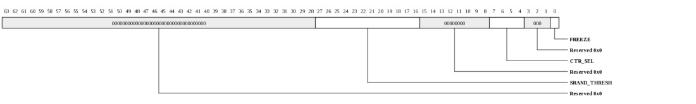
| Bits | Name | Type | Reset | Description
| 27:16 | SRAND_THRESH | RW | 4 | Determines how likely a bucket configured as STICKY_RAND is to be re-picked. The probability that an incoming packet will cause a non-full NotifRing to be re-picked is SRAND_THRESH/4095. Setting to zero will cause STICKY_RAND buckets to NEVER re-pick thus acting like a STICKY bucket. Setting to 0xfff will cause STICKY_RAND buckets to act like ALWAYS_PICK buckets. Note that this field is only supported on the Gx100. | 7:4 | CTR_SEL | RW | 0 | Indicates which load balancer performance counter should be selected (one counter is shared amongst all LBL_CTL.CTR_SEL events). The counter is LBL_STAT_CTR |
0 | FREEZE | RW | 0 | When 1, the load balancer will not accept any new packets from the classifier. This may be used to update the load balancer configuration. While the load balancer is frozen, packets will accumulate in the iPkt buffer. After writing the freeze bit to 1, software must wait at least 12 IO clock cycles for the load balancer to be drained. An MF after the MMIO store that writes this register is sufficient to insure that the drain has occurred. | |
|---|
Load Balancer Stats Counter (MPIPE_LBL_STAT_CTR: 0x2128)
Provides count of event selected by LBL_CTL.CTR_SEL with read-to-clear functionality.This register is protected at level 1

| Bits | Name | Type | Reset | Description
| 31:0 | VAL | RW | 0 | Contains the value of the counter being accessed by LBL_CTL.CTR_SEL. Saturates at all 1's. Clears on read. LBL_CTR Interrupt is asserted when value reaches 0xFFFFFFFF. | |
|---|
Load Balancer Stats Counter (MPIPE_LBL_STAT_CTR_RD: 0x2130)
Provides count of event selected by LBL_CTL.CTR_SELThis register is protected at level 1

| Bits | Name | Type | Reset | Description
| 31:0 | VAL | RO | 0 | Contains the value of the counter being accessed by LBL_CTL.CTR_SEL. Saturates at all 1's. LBL_CTR Interrupt is asserted when value reaches 0xFFFFFFFF. | |
|---|
Load Balancer NotifRing State (MPIPE_LBL_NR_STATE: 0x2138-0x21b7)
Provides fullness of each NotifRing. There are 16 registers. Each register contains the state of 16 NotifRings.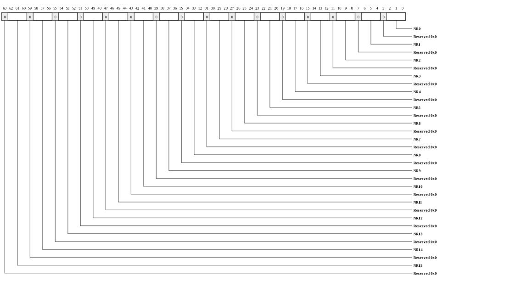
| Bits | Name | Type | Reset | Description
| 62:60 | NR15 | RO | 0 | Contains the quantization level for NotifRing15. | 58:56 | NR14 | RO | 0 | Contains the quantization level for NotifRing14. | 54:52 | NR13 | RO | 0 | Contains the quantization level for NotifRing13. | 50:48 | NR12 | RO | 0 | Contains the quantization level for NotifRing12. | 46:44 | NR11 | RO | 0 | Contains the quantization level for NotifRing11. | 42:40 | NR10 | RO | 0 | Contains the quantization level for NotifRing10. | 38:36 | NR9 | RO | 0 | Contains the quantization level for NotifRing9. | 34:32 | NR8 | RO | 0 | Contains the quantization level for NotifRing8. | 30:28 | NR7 | RO | 0 | Contains the quantization level for NotifRing7. | 26:24 | NR6 | RO | 0 | Contains the quantization level for NotifRing6. | 22:20 | NR5 | RO | 0 | Contains the quantization level for NotifRing5. | 18:16 | NR4 | RO | 0 | Contains the quantization level for NotifRing4. | 14:12 | NR3 | RO | 0 | Contains the quantization level for NotifRing3. | 10:8 | NR2 | RO | 0 | Contains the quantization level for NotifRing2. | 6:4 | NR1 | RO | 0 | Contains the quantization level for NotifRing1. | 2:0 | NR0 | RO | 0 | Contains the quantization level for NotifRing0. When 7, the NotifRing will not receive any more descriptors from the load balancer. The other 7 "fullness" values are determined by the LBL_QUANT_THRESH settings. | |
|---|
Buffer Stack Manager Control (MPIPE_BSM_CTL: 0x2200)
Configuration parameters for the buffer stack managerThis register is protected at level 2
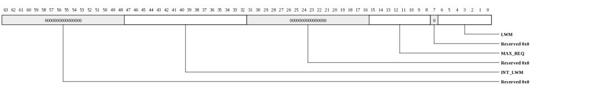
| Bits | Name | Type | Reset | Description
| 47:32 | INT_LWM | RW | 0064h | Number of 12-descriptor blocks in the memory-based buffer stack at which a stack-almost-empty interrupt will be dispatched. An interrupt is triggered when BSM_INIT_DAT_0.TOS_IDX decrements to this value. There may be up to 64 additional descriptors in the hardware cache when the interrupt occurs. Interrupts for individual stacks may be enabled via the associated interrupt binding. | 15:8 | MAX_REQ | RW | 40h | Maximum number of outstanding spill and fill requests. | 6:0 | LWM | RW | 12h | Number of buffer descriptors in the 64-entry stack-cache at which the BSM will fetch more descriptors. Must be set to at least 1 and no greater than 51. Larger values are required to cover longer Tile-memory latency. But smaller values provide more headroom to prevent unnecessary spills and fills of the stack cache. This should be set to the max buffer consumption rate times the expected buffer-stack read latency. For example, at 60 million packets per second and 200 ns of latency, this should be set to at least 12. | |
|---|
BSM Status (MPIPE_BSM_STS: 0x2208)
BSM statusThis register is protected at level 2
| Bits | Name | Type | Reset | Description
| 4:0 | STACK_OVFL_IDX | RO | 0 | Contains the stack index associated with the last stack overflow that occurred. | |
|---|
Buffer Stack Manager Init Control (MPIPE_BSM_INIT_CTL: 0x2210)
Initialization control for the buffer stack manager.This register is protected at level 2
| Bits | Name | Type | Reset | Description
| 5:1 | STACK_IDX | RW | 0 | Selects stack to be accessed. This register auto-increments on each read or write to BTM_INIT_DAT_n when REG is 1. | 0 | REG | RW | 0 | Selects register to be accessed (BSM_INIT_DAT_0 vs. BSM_INIT_DAT_1). This register auto-increments on each read or write to BTM_INIT_DAT_n. | |
|---|
Buffer Stack Manager Init Data (MPIPE_BSM_INIT_DAT: 0x2218)
Read/Write data for buffer stack manager initialization (VA translations and stack locations)This register is protected at level 2
| Bits | Name | Type | Reset | Description
| 63:0 | DAT | RW | 0 | Contents may be either BSM_INIT_DAT_0 or BSM_INIT_DAT_1, depending on REG value in BSM_INIT_CTL. | |
|---|
Buffer Stack Manager Init Data 0 (MPIPE_BSM_INIT_DAT_0: 0x2218)
Read/Write data for buffer stack manager initialization (VA translations and stack locations)This register is protected at level 2
| Bits | Name | Type | Reset | Description
| 63:32 | TOS_IDX | RW | 0 | Top-of-stack pointer relative to base in 64-byte increments. The physical address of the top of stack is BASE_PA*65536 + IDX*64 - this is where the next set of buffers will be written. | 31:0 | LIM | RW | 0 | The stack manager will not be allowed to write buffers at or above BASE_PA*65536 + LIM*64. The stack is full when IDX==LIM. | |
|---|
Buffer Stack Manager Init Data 1 (MPIPE_BSM_INIT_DAT_1: 0x2218)
NOTE: This register only exists in the following devices: Gx9 Gx16 Gx36 Gx72.Read/Write data for buffer stack manager initialization (VA translations and stack locations)
This register is protected at level 2
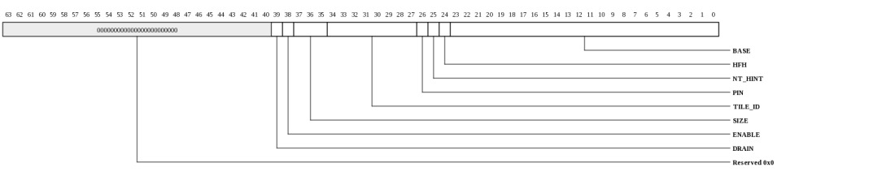
| Bits | Name | Type | Reset | Description
| 39 | DRAIN | RW | 0 | When written with a one, the stack manager will clear the state of the hardware cache and wait for any outstanding stack reads to complete. Hardware clears this bit once state has been cleared. | 38 | ENABLE | RW | 0 | This bit enables the physical memory backing storage for the stack. When clear, the buffer stack manager will not attempt to fetch or spill buffer descriptors from this stack. The stack manager's storage may still be used to store up to 64 buffer descriptors. This bit is cleared by hardware reset. | 37:35 | SIZE | RW | 0 | Buffer Size for all buffers stored on this stack. |
34:27 | TILE_ID | RW | 0 | If HFH is 0, TileID is the home Tile. If HFH is 1, TileID[7:4] is the HFH table mask and TileID[3:0] is the HFH table offset. HFH and TileID are typically programmed to match the associated PTE. | 26 | PIN | RW | HW | When asserted, only the IO pinned ways in the home cache will be used. | 25 | NT_HINT | RW | 0 | The NT-hint bit is a performance hint to the cache system that the stack data is not likely to be touched in a relatively short window of time. | 24 | HFH | RW | 0 | Whether stack is hash-for-home | 23:0 | BASE | RW | 0 | PA[41:16] representing base of stack. Thus all stacks are aligned to 64 kB. | |
|---|
Sequence Number and packet counter Access (MPIPE_SQN_CTR_CTL: 0x2300)
Access to general purpose sequence numbers and packet countersThis register is protected at level 2
| Bits | Name | Type | Reset | Description
| 17 | CTR_MODE | RW | 0 | When 0, reads to a packet counter will clear it. When 1, the counter is left intact. This bit has no effect on accesses to sequence numbers - sequence numbers do NOT clear when read. | 16 | STRUCT_SEL | RW | 0 | Indicates structure to be accessed. |
12:0 | IDX | RW | 0 | GP Sequence number or counter to be read/written. Increments automatically on write or read to SQN_INIT_WDAT | |
|---|
Sequence Number and Packet Counter Data (MPIPE_SQN_CTR_DAT: 0x2308)
Read/Write data for sequence numbers and packet counters.This register is protected at level 2
| Bits | Name | Type | Reset | Description
| 47:0 | DAT | RW | 0 | When STRUCT_SEL=SQN, this is the write/read data for the sequence number associated with SQN_CTL.IDX. All sequence numbers initialize to zero. When STRUCT_SEL=CTR, this is the write/read data for the packet counter associated with SQN_CTL.IDX. All counters initialize to zero. SQN_CTL.IDX increments automatically on each write or read |
|---|
Sequence Number and Packet Counter Data (MPIPE_SQN_CTR_DAT_SQN: 0x2308)
Read/Write data for sequence numbers when SQN_CTL.STRUCT_SEL=SQN.This register is protected at level 2
| Bits | Name | Type | Reset | Description
| 31:0 | SQN | RW | 0 | Sequence number associated with SQN_CTL.IDX. This is used in the GP_SQN field in the packet descriptor and incremented after being used. For devices without IDMA_CTL.EXT_SQN support, the sequence number is 16-bits. | |
|---|
iDMA Notif Control (MPIPE_NTF_CTL: 0x2310)
Configuration for the iDMA notification servicesThis register is protected at level 2
| Bits | Name | Type | Reset | Description
| 10 | TUP_NO_ACK | RW | 0 | When 1, the tail pointer writes do not generate an ACK from the memory system thus saving mesh bandwidth. However, setting to one will cause NotifRing interrupts to be delivered out-of-order with respect to the tail pointer writes. Systems using interrupts for packet delivery typically set this bit to 0. Systems using strictly polling may set this to 1. Changing TUP_NO_ACK while packets are being written into the system may cause NotifRing interrupts to be lost. | 9 | TUP_ENA | RW | 1 | Enable descriptor ring tail update each time a packet descriptor has been written to a NotifRing. If TUP_ENA is clear, TUP_NO_ACK must be asserted in order to generate NotifRing interrupts. Most systems will leave this bit as 1. | 8 | TUP_PTC | RW | 1 | Use pad-to-cacheline writes on tail pointer updates. Saves memory bandwidth if cacheline has been evicted, but must only be used if software is not storing additional information in the first cacheline of each NotifRing | 7:0 | MAX_REQ | RW | ffh | Maximum number of NotifRing tail pointer updates allowed to be outstanding simultaneously. Does not apply if TUP_NO_ACK is 1. | |
|---|
Ingress packet drop counter (MPIPE_INGRESS_DROP_COUNT: 0x2318)
Provides count of packets dropped (or not fully delivered) for any reason including iPkt-truncate, iPkt-discard, classifier-discard, load-balancer discard, buffer error, TLB fault drop. Saturates at all 1's.This register is protected at level 1
| Bits | Name | Type | Reset | Description
| 43:0 | INGRESS_DROP_COUNT | RO | 0 | Provides count of packets dropped (or not fully delivered) for any reason including iPkt-truncate, iPkt-discard, classifier-discard, load-balancer discard, buffer error, TLB fault drop. Saturates at all 1's. | |
|---|
Ingress packet drop counter with read-to-clear functionality (MPIPE_INGRESS_DROP_COUNT_RC: 0x2320)
Provides count of packets dropped (or not fully delivered) for any reason including iPkt-truncate, iPkt-discard, classifier-discard, load-balancer discard, buffer error, TLB fault drop. Saturates at all 1's.This register is protected at level 1
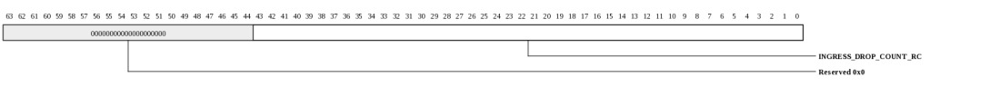
| Bits | Name | Type | Reset | Description
| 43:0 | INGRESS_DROP_COUNT_RC | RW | 0 | Provides count of packets dropped (or not fully delivered) for any reason including iPkt-truncate, iPkt-discard, classifier-discard, load-balancer discard, buffer error, TLB fault drop. Saturates at all 1's. | |
|---|
Ingress packet counter (MPIPE_INGRESS_PKT_COUNT: 0x2328)
Provides count of all ingress packets. Saturates at all 1's.This register is protected at level 1
| Bits | Name | Type | Reset | Description
| 43:0 | INGRESS_PKT_COUNT | RO | 0 | Provides count of all ingress packets. Saturates at all 1's. | |
|---|
Ingress packet counter with read-to-clear functionality. Saturates at all 1's. (MPIPE_INGRESS_PKT_COUNT_RC: 0x2330)
Provides count of all ingress packets.This register is protected at level 1
| Bits | Name | Type | Reset | Description
| 43:0 | INGRESS_PKT_COUNT_RC | RW | 0 | Provides count of all ingress packets. | |
|---|
Egress packet counter (MPIPE_EGRESS_PKT_COUNT: 0x2338)
Provides count of all egress packets. Saturates at all 1's.This register is protected at level 1
| Bits | Name | Type | Reset | Description
| 43:0 | EGRESS_PKT_COUNT | RO | 0 | Provides count of all egress packets. Saturates at all 1's. | |
|---|
Egress packet counter with read-to-clear functionality. Saturates at all 1's. (MPIPE_EGRESS_PKT_COUNT_RC: 0x2340)
Provides count of all egress packets.This register is protected at level 1
| Bits | Name | Type | Reset | Description
| 43:0 | EGRESS_PKT_COUNT_RC | RW | 0 | Provides count of all egress packets. | |
|---|
Ingress byte counter. (MPIPE_INGRESS_BYTE_COUNT: 0x2348)
Provides count of bytes received from MACs (does not include overhead such as IPG, preamble, or CRC unless those are provided in the data to SW). Wraps when incremented beyond 2^50.This register is protected at level 1
| Bits | Name | Type | Reset | Description
| 49:0 | INGRESS_BYTE_COUNT | RO | 0 | Provides count of bytes received from MACs (does not include overhead such as IPG, preamble, or CRC unless those are provided in the data to SW). Wraps when incremented beyond 2^50. | |
|---|
Ingress byte counter with read-to-clear functionality (MPIPE_INGRESS_BYTE_COUNT_RC: 0x2350)
Provides count of bytes received from MACs (does not include overhead such as IPG, preamble, or CRC unless those are provided in the data to SW). Clears on read. Wraps when incremented beyond 2^50.This register is protected at level 1
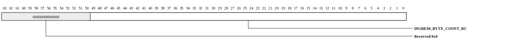
| Bits | Name | Type | Reset | Description
| 49:0 | INGRESS_BYTE_COUNT_RC | RO | 0 | Provides count of bytes received from MACs (does not include overhead such as IPG, preamble, or CRC unless those are provided in the data to SW). Clears on read. Wraps when incremented beyond 2^50. | |
|---|
Egress byte counter. (MPIPE_EGRESS_BYTE_COUNT: 0x2358)
Provides count of bytes sent to MACs (does not include overhead such as IPG, preamble, or CRC unless those are provided in the data by SW). Wraps when incremented beyond 2^50.This register is protected at level 1
| Bits | Name | Type | Reset | Description
| 49:0 | EGRESS_BYTE_COUNT | RO | 0 | Provides count of bytes sent to MACs (does not include overhead such as IPG, preamble, or CRC unless those are provided in the data by SW). Wraps when incremented beyond 2^50. | |
|---|
Egress byte counter with read-to-clear functionality (MPIPE_EGRESS_BYTE_COUNT_RC: 0x2360)
Provides count of bytes sent to MACs (does not include overhead such as IPG, preamble, or CRC unless those are provided in the data by SW). Clears on read. Wraps when incremented beyond 2^50.This register is protected at level 1
| Bits | Name | Type | Reset | Description
| 49:0 | EGRESS_BYTE_COUNT_RC | RO | 0 | Provides count of bytes sent to MACs (does not include overhead such as IPG, preamble, or CRC unless those are provided in the data by SW). Clears on read. Wraps when incremented beyond 2^50. | |
|---|
eDMA Descriptor Manager Init Control (MPIPE_EDMA_DM_INIT_CTL: 0x2400)
Initialization control for the eDMA descriptor manager data structuresThis register is protected at level 2
| Bits | Name | Type | Reset | Description
| 17:16 | STRUCT_SEL | RW | 0 | Structure to be accessed. |
5:0 | IDX | RW | 0 | eDMA Ring to be accessed. Increments automatically on write or read to EDMA_DM_INIT_WDAT | |
|---|
eDMA Descriptor Manager Init Data (MPIPE_EDMA_DM_INIT_DAT: 0x2408)
Read/Write data for eDMA descriptor manager setupThis register is protected at level 2

| Bits | Name | Type | Reset | Description
| 63:0 | DAT | RW | 0 | Write/Read data for the structure configured in EDMA_DM_INIT_CTL. EDMA_DM_INIT_CTL.IDX selects the eDMA ring being accessed and increments automatically on each write or read. The format for this data depends on the structure being accessed. | |
|---|
eDMA Descriptor Manager Init Data when EDMA_DM_INIT_CTL.STRUCT_SEL=SETUP (MPIPE_EDMA_DM_INIT_DAT_SETUP: 0x2408)
NOTE: This register only exists in the following devices: Gx9 Gx16 Gx36 Gx72.Read/Write data for eDMA descriptor manager setup
This register is protected at level 2

| Bits | Name | Type | Reset | Description
| 46 | STALL | RW | 0 | Ring stall. When asserted, no descriptors in the descriptor-fetch buffer will be processed. Hardware will set this bit automatically if a descriptor error is encountered on the associated ring. | 45 | FLUSH | RW | 0 | Flush mode. When set, the descriptor buffer will be cleared and all pending data in the packet buffer will be discarded. Typically used along with EDMA_CTL.FENCE to drain a ring after an application crashes or the ring needs to be reassigned. | 44 | HUNT | RW | 0 | Hunt Mode. When 1, the descriptor fetcher will periodically check for valid descriptors on the ring even if the descriptor has not been posted. This allows software to write descriptors without posting or to post without an MF between the descriptor write and the post. | 43 | FREEZE | RW | 1 | Ring Freeze. The ring will not fetch new descriptors when this is asserted. Descriptors that have already been fetched will continue to be processed. Hardware will set this bit automatically if a descriptor error is encountered on the associated ring. | 42:41 | RING_SIZE | RW | 0 | Encoded Ring Size. |
40:33 | TILEID | RW | 0 | Home Tile when HFH=0, or {mask,offset} when HFH=1. | 30 | HFH | RW | 0 | If HFH is 0, TileID is the home Tile. If HFH is 1, TileID[7:4] is the HFH table mask and TileID[3:0] is the HFH table offset. | 29:0 | BASE_PA | RW | 0 | PA[41:10] of base of eDMA descriptor ring. Rings must be naturally aligned in PA space based on the ring size. | |
|---|
eDMA Descriptor Manager Init Data when EDMA_DM_INIT_CTL.STRUCT_SEL=HEAD (MPIPE_EDMA_DM_INIT_DAT_HEAD: 0x2408)
Read/Write data for eDMA descriptor manager setup. These fields are typically only accessed when cleaning up and restarting a ring. When a ring is restarted, these must be written to zero.This register is protected at level 2
| Bits | Name | Type | Reset | Description
| 16 | GNUM | RW | 0 | Current gnum (valid descriptor will have inverted gnum) | 15:0 | HEAD | RW | 0 | | |
|---|
eDMA Descriptor Manager Init Data when EDMA_DM_INIT_CTL.STRUCT_SEL=DESC_STATE0 (MPIPE_EDMA_DM_INIT_DAT_DESC_STATE0: 0x2408)
Read/Write data for eDMA descriptor manager setup.This register is protected at level 2
| Bits | Name | Type | Reset | Description
| 63:0 | STATE | RW | 1 | Current descriptor state. There are 64 2-bit entries. Entries 0-31 are in EDMA_DM_INIT_DAT_DESC_STATE0 and entries 32-63 are in EDMA_DM_INIT_DAT_DESC_STATE1. When a ring is being restarted, this register must be written to 1. Each 2-bit entry represents the hardware state of the descriptor being monitored at the associated location. Bits[1:0] represent the state of the descriptor at the HEAD. Bits[3:2] represent the state at HEAD+1 etc. The states are encoded as: | ...0 = UNKNOWN - descriptor state is not known by hardware and will need to be fetched from Tile memory ...1 = KNOWN_INVALID - descriptor state is known to be invalid and does not need to be fetched from Tile memory (this is the reset state for the first 64 descriptors) ...2 = KNOWN_VALID - descriptor is known to be valid based on software descriptor posts. A Tile memory fetch will eventually be launched to retrieve the descriptor. ...3 = DONE - valid descriptor has been fetched and is in the process of being enqueued for processing |
|---|
eDMA Descriptor Manager Init Data when EDMA_DM_INIT_CTL.STRUCT_SEL=DESC_STATE1 (MPIPE_EDMA_DM_INIT_DAT_DESC_STATE1: 0x2408)
Read/Write data for eDMA descriptor manager setup.This register is protected at level 2

| Bits | Name | Type | Reset | Description
| 63:0 | STATE | RW | 0 | Current descriptor state. See EDMA_DM_INIT_DAT_DESC_STATE0. When a ring is being restarted, this register must be written to 0. | |
|---|
eDMA Request Generator Init Control (MPIPE_EDMA_RG_INIT_CTL: 0x2410)
Initialization control for the eDMA request generator data structuresThis register is protected at level 2
| Bits | Name | Type | Reset | Description
| 18:16 | STRUCT_SEL | RW | 0 | Structure to be accessed. |
5:0 | IDX | RW | 0 | Index into structure to be accessed. Increments automatically on write or read to EDMA_RG_INIT_WDAT | |
|---|
eDMA Request Generator Init Data (MPIPE_EDMA_RG_INIT_DAT: 0x2418)
Read/Write data for eDMA descriptor manager setupThis register is protected at level 2

| Bits | Name | Type | Reset | Description
| 63:0 | DAT | RW | 0 | Write/Read data for the structure configured in EDMA_RG_INIT_CTL. EDMA_RG_INIT_CTL.IDX indexes into the structure being accessed and increments automatically on each write or read. The format for this data depends on the structure being accessed. | |
|---|
eDMA Request Generator Init Data (MPIPE_EDMA_RG_INIT_DAT_STACK_PROT: 0x2418)
Read/Write data for eDMA descriptor manager setup. This register describes EDMA_RG_INIT_DAT when EDMA_RG_INIT_CTL.STRUCT_SEL=STACK_PROT. EDMA_RG_INIT_CTL.IDX selects the ring being configured.This register is protected at level 2
| Bits | Name | Type | Reset | Description
| 63:32 | STACK_ENA | RW | ffffffffh | StackEnable: Each bit represents a buffer stack index. If a bit is set, the ring is allowed to return buffers to the associated buffer stack. If the bit is clear, access is denied. Note that to access a buffer stack, both the StackEnable bit and the ASID_Enable bit must be set. | 31:0 | ASID_ENA | RW | ffffffffh | ASID_Enable: Each bit represents an ASID. If a bit is set, the ring is allowed to access the associated ASID. If the bit is clear, access is denied. | |
|---|
eDMA Request Generator Init Data (MPIPE_EDMA_RG_INIT_DAT_REQ_THR: 0x2418)
Read/Write data for eDMA descriptor manager setup. This register describes EDMA_RG_INIT_DAT when EDMA_RG_INIT_CTL.STRUCT_SEL=REQ_THR. EDMA_RG_INIT_CTL.IDX is not used.This register is protected at level 2
| Bits | Name | Type | Reset | Description
| 3:0 | REQ_THR | RW | 1 | Number of additional cacheline read requests the eDMA engine may send for a descriptor before retrying. Setting this to a larger value makes the eDMA engine more efficient on larger transfers (saving some power) but may cause temporary starvation on rings that are sending small packets at high bandwidth. Setting to 8 or larger allows the eDMA engine to send as many requests as it can before switching rings. | |
|---|
eDMA Request Generator Init Data (MPIPE_EDMA_RG_INIT_DAT_THRESH: 0x2418)
Read/Write data for eDMA descriptor manager setup. This register describes EDMA_RG_INIT_DAT when EDMA_RG_INIT_CTL.STRUCT_SEL=THRESH. EDMA_RG_INIT_CTL.IDX selects the ring being configured.This register is protected at level 2
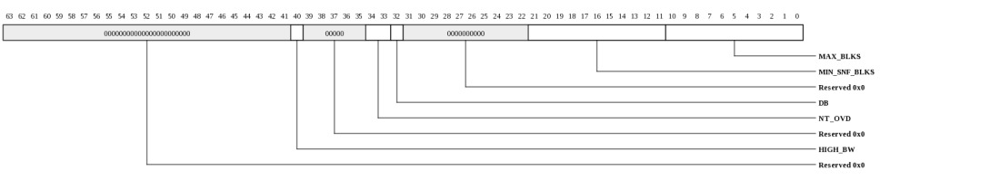
| Bits | Name | Type | Reset | Description
| 40 | HIGH_BW | RW | 0 | Indicates that the associated ring is part of the high bandwidth descriptor arbitration group. Descriptors for rings in this group are chosen by the eDMA engine with higher priority to ensure that they are not starved by lower bandwidth rings. Typically, high speed ports such as XAUI would be placed in this group and lower speed ports as well as loopback channels would have HIGH_BW set to zero. The ports with HIGH_BW set to zero will still consume full bandwidth once the HIGH_BW ports are satisfied. | 34:33 | NT_OVD | RW | 2 | NonTemporal override. DMA Data reads with NT-1 (FORCE1 or from TLB in mode0) will cause the egress packet data in Tile memory to be corrupted after the packet is sent since the previous memory contents will be exposed when the cachelines are invalidated. Hence this mode must only be used if the packet egress is the final use of the buffer data. |
32 | DB | RW | 1 | Specifies that this ring may consume dynamic (undifferentiated) ePkt blocks. When 0, the flow may only consume from the reserved block pool. | 21:11 | MIN_SNF_BLKS | RW | 12 | Specifies the number of 128-byte blocks this ring must store prior to starting to send a packet. | - Packets that exceed this size may not use the checksum offload service since the header octets containing the checksum may have been sent prior to the complete packet being stored. - MIN_SNF_BLKS be less than MAX_BLKS otherwise the ring could hang - Packets larger than MIN_SNF_BLKS may be sent however care must be taken to insure that sufficient descriptors have been posted to prevent underrun. - This should be set to at least 3 for Interlaken ports to allow optimized burst scheduling. 10:0 | MAX_BLKS | RW | 13 | Specifies how many 128-byte blocks this ring is allowed to consume. If the number of active rings times the MAX_BLKS+2 in each ring exceeds MPIPE_EDMA_STS.NUM_EPKT_BLOCKS, the rings could block each other if a ring is stalled on egress. The "+2" accounts for extra blocks that can skid into the buffer as it fills. Rings targetting 10G ports should set this to at least 13 to allow line rate operation. Rings targetting 40G ports should set this to at least 50 to allow line rate operation. | |
|---|
eDMA Request Generator Init Data (MPIPE_EDMA_RG_INIT_DAT_MAP: 0x2418)
Read/Write data for eDMA descriptor manager setup. This register describes EDMA_RG_INIT_DAT when EDMA_RG_INIT_CTL.STRUCT_SEL=MAP. EDMA_RG_INIT_CTL.IDX selects the ring being configured.This register is protected at level 2
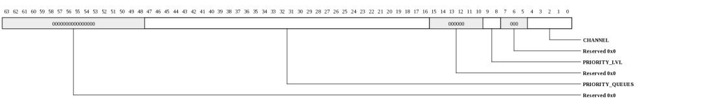
| Bits | Name | Type | Reset | Description
| 47:16 | PRIORITY_QUEUES | RW | 0 | For MACs that support priority-based flow control (such as 802.1Qbb), this field determines which queues this ring is associated with. For example, if bit[2] is set then this ring will NOT egress packets when queue-2 is paused from the MAC. Software must insure that packets associated with a given queue are egressed using a ring that has the associated PRIORITY_QUEUES bit set. For rings assigned to a loopback channel, the highest set bit in this field determines which iPkt priority queue counter is incremented. Note that queues above 7 are only meaningful for loopback. | For MACs that support per-channel flow control (such as Interlaken), this field must have the bit corresponding to the channel's associated priority queue number set to one and the remaining bits set to zero. For channelized devices, the mapping from channel number to priority queue is interface-specific and is defined in the IO Guide. This field should be left zero for MACs using standard 802.3 pause frames since the MAC itself will provide back pressure on all packets when a pause frame is received. 9:8 | PRIORITY_LVL | RW | 0 | Specifies the priority level for this ring. Rings with a higher priority level will be chosen over rings with a lower priority level. Within each ring, the selection is round-robin. A token-based bandwidth arbitration scheme is used to provide rate shaping for each priority level via the EDMA_BW_CTL register. |
4:0 | CHANNEL | RW | HW | Specifies the egress channel associated with this ring. Resets to ring==channel for rings 0-31 and channel=0 for all others. | |
|---|
eDMA Control (MPIPE_EDMA_CTL: 0x2420)
Configuration for eDMA servicesThis register is protected at level 2
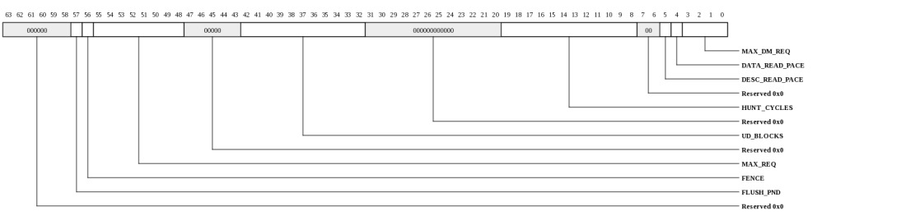
| Bits | Name | Type | Reset | Description
| 57 | FLUSH_PND | RO | 0 | Set by hardware when an eDMA ring in FLUSH mode still has descriptor fetches or ePKT blocks remaining. This bit must be clear prior to restarting the ring. | 56 | FENCE | RW | 0 | When written with a 1, a fence is initiated. Hardware will clear this bit once all older descriptors have completed processing. This is typically used after putting an eDMA ring into flush mode. | 55:48 | MAX_REQ | RW | ffh | Max number of data requests allowed outstanding to the Tile memory system. | 42:32 | UD_BLOCKS | RW | 4b0h | Number of ePkt blocks in the undifferentiated pool. As long as the sum of the MAX_BLKS thresholds is less than NUM_EPKT_BLOCKS-UD_BLOCKS, the eDMA engine guarantees that head of line blocking will not occur | 19:8 | HUNT_CYCLES | RW | 0fah | Controls how often "hunt" prefetches are sent. Hunt prefetches are periodically sent for rings that have hunt enabled in order to find valid descriptors. Setting this to a lower value will improve the response time in systems where descriptors posts are not being sent to eDMA. But smaller numbers will also consume additional request bandwidth, especially when multiple rings are operating in hunt mode. | 5 | DESC_READ_PACE | RW | 1 | When asserted, the descriptor engine will pace its read requests to avoid oversubscribing the response network bandwidth. | 4 | DATA_READ_PACE | RW | 1 | When asserted, the eDMA engine will pace its read requests to avoid oversubscribing the response network bandwidth. | 3:0 | MAX_DM_REQ | RW | 15 | Maximum number of eDMA descriptor ring read requests the descriptor manager hardware will allow outstanding to a single ring. | |
|---|
eDMA Status (MPIPE_EDMA_STS: 0x2428)
eDMA statusThis register is protected at level 2
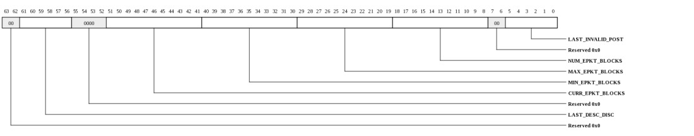
| Bits | Name | Type | Reset | Description
| 61:56 | LAST_DESC_DISC | RO | 0 | Contains the ring number corresponding to a EDMA_DESC_DISCARD interrupt. Updates each time a descriptor-discard event is detected. | 51:41 | CURR_EPKT_BLOCKS | RO | 0 | Indicates the current number of ePkt blocks that have been consumed. | 40:30 | MIN_EPKT_BLOCKS | RO | 0 | Indicates the min number of ePkt blocks that have been consumed. Sets to the current block count on read. | 29:19 | MAX_EPKT_BLOCKS | RO | 0 | Indicates the max number of ePkt blocks that have been consumed. Clears on read. | 18:8 | NUM_EPKT_BLOCKS | RO | 79eh | Indicates the total number of 128-byte blocks provided in the ePkt buffer. Typically used by configuration software to calculate the per-ring EDMA_RG_INIT_DAT.MIN_SNF_BLKS and EDMA_RG_INIT_DAT.MAX_BLKS settings. | 5:0 | LAST_INVALID_POST | RO | 0 | Contains the ring number corresponding to a EDMA_POST_ERR interrupt. Updates each time an invalid-post event is detected. | |
|---|
eDMA Diag Status (MPIPE_EDMA_DIAG_STS: 0x2430)
eDMA diagnostics statusThis register is protected at level 2
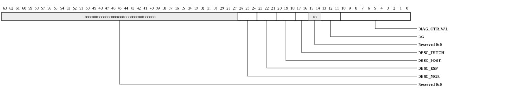
| Bits | Name | Type | Reset | Description
| 26:24 | DESC_MGR | RO | 0 | Descriptor manager state. | 23:21 | DESC_RSP | RO | 0 | Descriptor response state. | 20:18 | DESC_POST | RO | 0 | Descriptor post state. | 17:16 | DESC_FETCH | RO | 0 | Descriptor fetch state. | 13:11 | RG | RO | 0 | Request generator state | 10:0 | DIAG_CTR_VAL | RO | 0 | Contains the value of the counter being accessed by EDMA_CTL.DIAG_CTR_SEL/IDX. | |
|---|
eDMA Data Latency (MPIPE_EDMA_DATA_LAT: 0x2438)
Provides random sample and record eDMA data read latencyThis register is protected at level 2

| Bits | Name | Type | Reset | Description
| 48 | CLEAR | WO | 0 | When written with a 1, sets MAX_LAT to zero and MIN_LAT to all 1's. | 46:32 | CURR_LAT | RO | 0 | Contains latency of the most recently sampled transaction. | 30:16 | MAX_LAT | RO | 0 | Contains maximum latency since last clear. | 14:0 | MIN_LAT | RO | 7fffh | Contains minimum latency since last clear. | |
|---|
eDMA Data Latency (MPIPE_EDMA_DESC_LAT: 0x2440)
Provides random sample and record eDMA descriptor read latencyThis register is protected at level 2

| Bits | Name | Type | Reset | Description
| 48 | CLEAR | WO | 0 | When written with a 1, sets MAX_LAT to zero and MIN_LAT to all 1's. | 46:32 | CURR_LAT | RO | 0 | Contains latency of the most recently sampled transaction. | 30:16 | MAX_LAT | RO | 0 | Contains maximum latency since last clear. | 14:0 | MIN_LAT | RO | 7fffh | Contains minimum latency since last clear. | |
|---|
eDMA Diag Control (MPIPE_EDMA_DIAG_CTL: 0x2448)
Configuration for eDMA diagnostics functionsThis register is protected at level 2
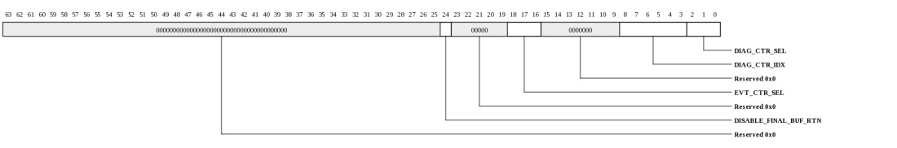
| Bits | Name | Type | Reset | Description
| 24 | DISABLE_FINAL_BUF_RTN | RW | 0 | When 0, the hardware will return the final buffer in a chain even if there's no data in that buffer. This makes the eDMA hardware able to return all buffers in an iDMA cut-through packet. When 1, only the buffers that actually contain data will be returned. | In systems where iDMA will not be utilizing cut-through or where cut-through is rare enough that software can return the "extra" buffer, performance can be slightly improved by setting this bit to 1. The performance impact is only noticable when there is extremely high bandwidth for a single ring. It is not likely to be noticable in systems that have more than one ring or less than line rate being sent to the MAC interfaces. Thus, on Gx36, this bit should be left 0 for normal operating mode. 18:16 | EVT_CTR_SEL | RW | 0 | Indicates which eDMA performance counter should be selected (one counter is shared amongst all EDMA_DIAG_CTL.EVT_CTR_SEL events). The counter is EDMA_STAT_CTR |
8:3 | DIAG_CTR_IDX | RW | 0 | Index into counter type being accessed. | 2:0 | DIAG_CTR_SEL | RW | 0 | Select set of internal counters to be read. The current value of the counter will be reflected in EDMA_DIAG_STS.DIAG_CTR_VAL |
|
|---|
eDMA Stats Counter (MPIPE_EDMA_STAT_CTR: 0x2450)
Provides count of event selected by EDMA_DIAG_CTL.EVT_CTR_SEL with read-to-clear functionality.This register is protected at level 2

| Bits | Name | Type | Reset | Description
| 31:0 | VAL | RW | 0 | Contains the value of the counter being accessed by EDMA_DIAG_CTL.EVT_CTR_SEL. Saturates at all 1's. Clears on read. EDMA_EVT_CTR Interrupt is asserted when value reaches 0xFFFFFFFF. | |
|---|
eDMA Stats Counter (MPIPE_EDMA_STAT_CTR_RD: 0x2458)
Provides count of event selected by EDMA_DIAG_CTL.EVT_CTR_SELThis register is protected at level 2

| Bits | Name | Type | Reset | Description
| 31:0 | VAL | RO | 0 | Contains the value of the counter being accessed by EDMA_DIAG_CTL.EVT_CTR_SEL. Saturates at all 1's. EDMA_EVT_CTR Interrupt is asserted when value reaches 0xFFFFFFFF. | |
|---|
eDMA Bandwidth Control (MPIPE_EDMA_BW_CTL: 0x2460)
NOTE: This register only exists in the following devices: Gx9 Gx16 Gx36 Gx72.Controls bandwidth provided to each priority level. A token bucket scheme is used wherein each of the 3 egress priority levels is provides with a token bucket. A token for the ring's priority level must be available for a packet to begin sending. Each time a 128-byte block is sent, a token is consumed. The token buckets for each priority level are replenished based on the settings in this register. These register settings control the rate at which tokens are replenished for each priority level. Each unit represents approximately 6*LINE_RATE/(N+1) where LINE_RATE includes packet overhead.
When set to 0, tokens are replenished as fast as they can be consumed hence setting all PRIORn_RATE values to zero will revert to a strict-priority scheme. Note that the packet arbiter can run faster than line rate since there is buffering in the egress path. Hence settings that allow the bandwidth to exceed LINE_RATE are meaningful. The setting for PRIOR2 is typically higher than PRIOR1 and PRIOR0 in order to prevent starvation. Similarly, PRIOR1 is typically set higher than PRIOR0.
This register is protected at level 2
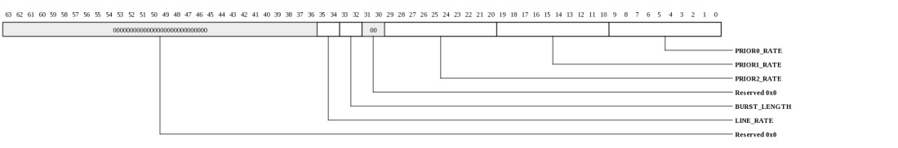
| Bits | Name | Type | Reset | Description
| 35:34 | LINE_RATE | RW | 0 | Used to scale back LINE_RATE in calculations above for systems that don't utilize all available bandwidth. This provides coarse granularity for the rate shaping. The PRIORn_RATE settings are used to fine tune. |
33:32 | BURST_LENGTH | RW | 1 | This controls the maximum number of 128-byte tokens can be accumulated. Larger numbers allow longer bursts. |
29:20 | PRIOR2_RATE | RW | 599 | Bandwidth setting for priority level-2 (highest priority). The maximum sustained bandwidth for the associated priority level is approximately 6*LINE_RATE/(N+1). Thus lower numbers represent more bandwidth provisioning. The default setting of 599 means that PRIOR2 may consume up to 1% of the available bandwidth. | 19:10 | PRIOR1_RATE | RW | 11 | Bandwidth setting for priority level-1 (medium priority). The default setting of 11 means that PRIOR1 may consume up to 50% of the available bandwidth. | 9:0 | PRIOR0_RATE | RW | 0 | Bandwidth setting for priority level-0 (lowest priority). The default setting of 0 allows PRIOR0 traffic to consume as much bandwidth as it can so long as there isn't PRIOR1/2 traffic available. For WRR arbitration, this should be set to approximately 20% higher than the expected total bandwidth in order to reduce high bandwidth bursts to the MACs and innaccuracy in the WRR arbitration due to rings temporarily not having data available for the arb. For example, if a 10G and 40G port are sending PRIOR0 traffic with rings in WRR mode, this should be set to 960. | |
|---|
Interrupt vector-0, write-one-to-clear (MPIPE_INT_VEC0_W1TC: 0x3000)
Interrupt status vector with write-one-to-clear functionality. Provides access to the same status bits that are visible in INT_VEC0_RTC. Bit definitions are provided in the INT_VEC0 register description.This register is protected at level 2
| Bits | Name | Type | Reset | Description
| 21:0 | INT_VEC0_W1TC | RW | 0 | Interrupt status vector with write-one-to-clear functionality. Provides access to the same status bits that are visible in INT_VEC0_RTC. Bit definitions are provided in the INT_VEC0 register description. | |
|---|
Interrupt vector-0, write-one-to-clear (MPIPE_INT_VEC0: 0x3000)
This describes the interrupt status vector that is accessible through INT_VEC0_W1TC and INT_VEC0_RTC.This register is protected at level 2
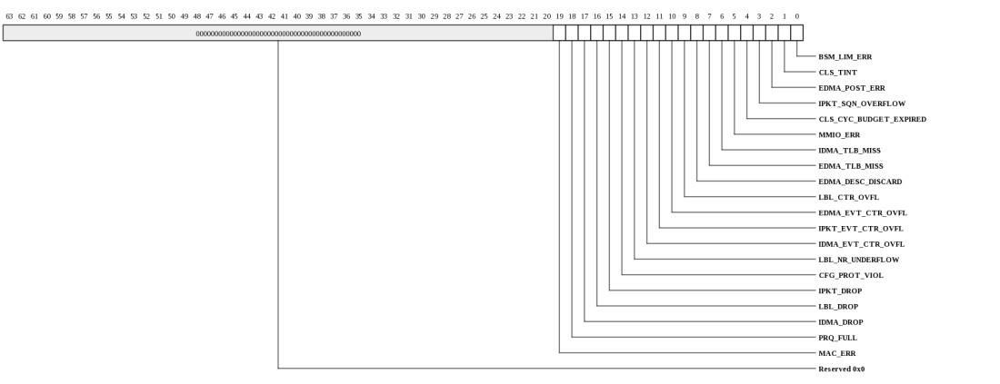
| Bits | Name | Type | Reset | Description
| 19 | MAC_ERR | RW | 0 | MAC Overrun Error condition has occurred. This is typically caused by the MPIPE's pclk running too slow | 18 | PRQ_FULL | RW | 0 | One of the iDMA priority queues has become full. This interrupt should only be used in MODE=0 (level-based interrupt) | 17 | IDMA_DROP | RW | 0 | iDMA dropped a packet due to out-of-buffers. | 16 | LBL_DROP | RW | 0 | Load balancer dropped a packet due to NR or bucket full. | 15 | IPKT_DROP | RW | 0 | iPkt dropped or truncated a packet due to buffer full. | 14 | CFG_PROT_VIOL | RW | 0 | a config access attempted to exceed its allowed protection level. | 13 | LBL_NR_UNDERFLOW | RW | 0 | NR release caused ring underflow. | 12 | IDMA_EVT_CTR_OVFL | RW | 0 | iDMA performance counter reached saturation. | 11 | IPKT_EVT_CTR_OVFL | RW | 0 | iPKT performance counter reached saturation. | 10 | EDMA_EVT_CTR_OVFL | RW | 0 | eDMA performance counter reached saturation. | 9 | LBL_CTR_OVFL | RW | 0 | Load balancer performance counter reached saturation. | 8 | EDMA_DESC_DISCARD | RW | 0 | An eDMA descriptor was discarded and the associated ring was frozen. Fault info captured in MPIPE_EDMA_STS. | 7 | EDMA_TLB_MISS | RW | 0 | An eDMA read encountered a TLB miss. The issuing ring is stalled. Fault info captured in MPIPE_TLB_EDMA_EXC_ADDR. | 6 | IDMA_TLB_MISS | RW | 0 | An iDMA write encountered a TLB miss. iDMA engine is stalled. Fault info captured in MPIPE_TLB_IDMA_EXC_ADDR. | 5 | MMIO_ERR | RW | 0 | An MMIO request encountered an error. Error info captured in MPIPE_MMIO_ERROR_INFO. This does not include config protection violations but does include service domain violations. | 4 | CLS_CYC_BUDGET_EXPIRED | RW | 0 | A classifier program has exceeded its cycle budget. | 3 | IPKT_SQN_OVERFLOW | RW | 0 | The MPIPE_IPKT_SQN sequence number has overflowed. | 2 | EDMA_POST_ERR | RW | 0 | Software posted a descriptor, but the fetcher did not find a valid descriptor. Error info captured in MPIPE_EDMA_STS. | 1 | CLS_TINT | RW | 0 | Classifier program wrote its Tile Interrupt SPR. | 0 | BSM_LIM_ERR | RW | 0 | Attempt to push more buffers onto a stack than are allowed. Error info captured in MPIPE_BSM_STS. | |
|---|
Interrupt vector-1, write-one-to-clear (MPIPE_INT_VEC1_W1TC: 0x3008)
Interrupt status vector with write-one-to-clear functionality. Provides access to the same status bits that are visible in INT_VEC1_RTC. This vector contains the interrupts associated with the 32 packet counters. Writing a 1 clears the status bit.This register is protected at level 2
| Bits | Name | Type | Reset | Description
| 31:0 | INT_VEC1_W1TC | RW | 0 | Interrupt status vector with write-one-to-clear functionality. Provides access to the same status bits that are visible in INT_VEC1_RTC. This vector contains the interrupts associated with the 32 packet counters. Writing a 1 clears the status bit. | |
|---|
Interrupt vector-2, write-one-to-clear (MPIPE_INT_VEC2_W1TC: 0x3010)
Interrupt status vector with write-one-to-clear functionality. Provides access to the same status bits that are visible in INT_VEC2_RTC. This vector contains the interrupts associated with the eDMA rings. Writing a 1 clears the status bit.This register is protected at level 2

| Bits | Name | Type | Reset | Description
| 63:0 | INT_VEC2_W1TC | RW | 0 | Interrupt status vector with write-one-to-clear functionality. Provides access to the same status bits that are visible in INT_VEC2_RTC. This vector contains the interrupts associated with the eDMA rings. Writing a 1 clears the status bit. | |
|---|
Interrupt vector 3, write-one-to-clear (MPIPE_INT_VEC3_W1TC: 0x3018)
Interrupt status vector with write-one-to-clear functionality. Provides access to the same status bits that are visible in INT_VEC3_RTC. This vector contains the interrupts associated with the iDMA NotifRings. Writing a 1 clears the status bit.This register is protected at level 2
| Bits | Name | Type | Reset | Description
| 63:0 | INT_VEC3_W1TC | RW | 0 | Interrupt status vector with write-one-to-clear functionality. Provides access to the same status bits that are visible in INT_VEC3_RTC. This vector contains the interrupts associated with the iDMA NotifRings. Writing a 1 clears the status bit. | |
|---|
Interrupt vector 4, write-one-to-clear (MPIPE_INT_VEC4_W1TC: 0x3020)
Interrupt status vector with write-one-to-clear functionality. Provides access to the same status bits that are visible in INT_VEC4_RTC. This vector contains the interrupts associated with the iDMA NotifRings. Writing a 1 clears the status bit.This register is protected at level 2
| Bits | Name | Type | Reset | Description
| 63:0 | INT_VEC4_W1TC | RW | 0 | Interrupt status vector with write-one-to-clear functionality. Provides access to the same status bits that are visible in INT_VEC4_RTC. This vector contains the interrupts associated with the iDMA NotifRings. Writing a 1 clears the status bit. | |
|---|
Interrupt vector 5, write-one-to-clear (MPIPE_INT_VEC5_W1TC: 0x3028)
Interrupt status vector with write-one-to-clear functionality. Provides access to the same status bits that are visible in INT_VEC5_RTC. This vector contains the interrupts associated with the iDMA NotifRings. Writing a 1 clears the status bit.This register is protected at level 2
| Bits | Name | Type | Reset | Description
| 63:0 | INT_VEC5_W1TC | RW | 0 | Interrupt status vector with write-one-to-clear functionality. Provides access to the same status bits that are visible in INT_VEC5_RTC. This vector contains the interrupts associated with the iDMA NotifRings. Writing a 1 clears the status bit. | |
|---|
Interrupt vector 6, write-one-to-clear (MPIPE_INT_VEC6_W1TC: 0x3030)
Interrupt status vector with write-one-to-clear functionality. Provides access to the same status bits that are visible in INT_VEC6_RTC. This vector contains the interrupts associated with the iDMA NotifRings. Writing a 1 clears the status bit.This register is protected at level 2
| Bits | Name | Type | Reset | Description
| 63:0 | INT_VEC6_W1TC | RW | 0 | Interrupt status vector with write-one-to-clear functionality. Provides access to the same status bits that are visible in INT_VEC6_RTC. This vector contains the interrupts associated with the iDMA NotifRings. Writing a 1 clears the status bit. | |
|---|
Interrupt vector 7, write-one-to-clear (MPIPE_INT_VEC7_W1TC: 0x3038)
Interrupt status vector with write-one-to-clear functionality. Provides access to the same status bits that are visible in INT_VEC7_RTC. This vector contains the interrupts associated with the buffer stacks. Writing a 1 clears the status bit.This register is protected at level 2
| Bits | Name | Type | Reset | Description
| 31:0 | INT_VEC7_W1TC | RW | 0 | Interrupt status vector with write-one-to-clear functionality. Provides access to the same status bits that are visible in INT_VEC7_RTC. This vector contains the interrupts associated with the buffer stacks. Writing a 1 clears the status bit. | |
|---|
Interrupt vector-0, read-to-clear (MPIPE_INT_VEC0_RTC: 0x3080)
Interrupt status vector with read-to-clear functionality. Provides access to the same status bits that are visible in INT_VEC0_W1TC. Reading this register clears all of the associated interrupts. Bit definitions are provided in the INT_VEC0 register description.This register is protected at level 2
| Bits | Name | Type | Reset | Description
| 21:0 | INT_VEC0_RTC | RO | 0 | Interrupt status vector with read-to-clear functionality. Provides access to the same status bits that are visible in INT_VEC0_W1TC. Reading this register clears all of the associated interrupts. Bit definitions are provided in the INT_VEC0 register description. | |
|---|
Interrupt vector-1, read-to-clear (MPIPE_INT_VEC1_RTC: 0x3088)
Interrupt status vector with read-to-clear functionality. Provides access to the same status bits that are visible in INT_VEC1_W1TC. This vector contains the interrupts associated with the 32 packet counters. Reading this register clears all of the associated interrupts.This register is protected at level 2
| Bits | Name | Type | Reset | Description
| 31:0 | INT_VEC1_RTC | RO | 0 | Interrupt status vector with read-to-clear functionality. Provides access to the same status bits that are visible in INT_VEC1_W1TC. This vector contains the interrupts associated with the 32 packet counters. Reading this register clears all of the associated interrupts. | |
|---|
Interrupt vector-2, read-to-clear (MPIPE_INT_VEC2_RTC: 0x3090)
Interrupt status vector with read-to-clear functionality. Provides access to the same status bits that are visible in INT_VEC2_W1TC. This vector contains the interrupts associated with the eDMA rings. Reading this register clears all of the associated interrupts.This register is protected at level 2

| Bits | Name | Type | Reset | Description
| 63:0 | INT_VEC2_RTC | RO | 0 | Interrupt status vector with read-to-clear functionality. Provides access to the same status bits that are visible in INT_VEC2_W1TC. This vector contains the interrupts associated with the eDMA rings. Reading this register clears all of the associated interrupts. | |
|---|
Interrupt vector 3, read-to-clear (MPIPE_INT_VEC3_RTC: 0x3098)
Interrupt status vector with read-to-clear functionality. Provides access to the same status bits that are visible in INT_VEC3_W1TC. This vector contains the interrupts associated with the iDMA NotifRings. Reading this register clears all of the associated interrupts.This register is protected at level 2
| Bits | Name | Type | Reset | Description
| 63:0 | INT_VEC3_RTC | RO | 0 | Interrupt status vector with read-to-clear functionality. Provides access to the same status bits that are visible in INT_VEC3_W1TC. This vector contains the interrupts associated with the iDMA NotifRings. Reading this register clears all of the associated interrupts. | |
|---|
Interrupt vector 4, read-to-clear (MPIPE_INT_VEC4_RTC: 0x30a0)
Interrupt status vector with read-to-clear functionality. Provides access to the same status bits that are visible in INT_VEC4_W1TC. This vector contains the interrupts associated with the iDMA NotifRings. Reading this register clears all of the associated interrupts.This register is protected at level 2
| Bits | Name | Type | Reset | Description
| 63:0 | INT_VEC4_RTC | RO | 0 | Interrupt status vector with read-to-clear functionality. Provides access to the same status bits that are visible in INT_VEC4_W1TC. This vector contains the interrupts associated with the iDMA NotifRings. Reading this register clears all of the associated interrupts. | |
|---|
Interrupt vector 5, read-to-clear (MPIPE_INT_VEC5_RTC: 0x30a8)
Interrupt status vector with read-to-clear functionality. Provides access to the same status bits that are visible in INT_VEC5_W1TC. This vector contains the interrupts associated with the iDMA NotifRings. Reading this register clears all of the associated interrupts.This register is protected at level 2
| Bits | Name | Type | Reset | Description
| 63:0 | INT_VEC5_RTC | RO | 0 | Interrupt status vector with read-to-clear functionality. Provides access to the same status bits that are visible in INT_VEC5_W1TC. This vector contains the interrupts associated with the iDMA NotifRings. Reading this register clears all of the associated interrupts. | |
|---|
Interrupt vector 6, read-to-clear (MPIPE_INT_VEC6_RTC: 0x30b0)
Interrupt status vector with read-to-clear functionality. Provides access to the same status bits that are visible in INT_VEC6_W1TC. This vector contains the interrupts associated with the iDMA NotifRings. Reading this register clears all of the associated interrupts.This register is protected at level 2
| Bits | Name | Type | Reset | Description
| 63:0 | INT_VEC6_RTC | RO | 0 | Interrupt status vector with read-to-clear functionality. Provides access to the same status bits that are visible in INT_VEC6_W1TC. This vector contains the interrupts associated with the iDMA NotifRings. Reading this register clears all of the associated interrupts. | |
|---|
Interrupt vector 7, read-to-clear (MPIPE_INT_VEC7_RTC: 0x30b8)
Interrupt status vector with read-to-clear functionality. Provides access to the same status bits that are visible in INT_VEC7_W1TC. This vector contains the interrupts associated with the buffer stacks. Reading this register clears all of the associated interrupts.This register is protected at level 2
| Bits | Name | Type | Reset | Description
| 31:0 | INT_VEC7_RTC | RO | 0 | Interrupt status vector with read-to-clear functionality. Provides access to the same status bits that are visible in INT_VEC7_W1TC. This vector contains the interrupts associated with the buffer stacks. Reading this register clears all of the associated interrupts. | |
|---|
Bindings for interrupt vectors (MPIPE_INT_BIND: 0x3100)
This register provides read/write access to all of the interrupt bindings for the MPIPE. The VEC_SEL field is used to select the vector being configured and the BIND_SEL selects the interrupt within the vector. To read a binding, first write the VEC_SEL and BIND_SEL fields along with a 1 in the NW field. Then read back the register.This register is protected at level 2
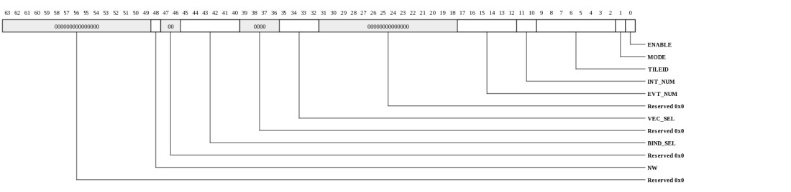
| Bits | Name | Type | Reset | Description
| 48 | NW | WO | 0 | When written with a 1, the interrupt binding data will not be modified. Set this when writing the VEC_SEL and BIND_SEL fields in preparation for a read. | 45:40 | BIND_SEL | RW | HW | Selects binding within the vector selected by VEC_SEL. | 35:32 | VEC_SEL | RW | HW | Selects vector whose bindings are to be accessed. |
17:12 | EVT_NUM | RW | HW | Event number to be delivered to Tile | 11:10 | INT_NUM | RW | HW | Interrupt number to be delivered to Tile | 9:2 | TILEID | RW | HW | Tile targeted for this interrupt in {x[3:0],y[3:0]} format. | 1 | MODE | RW | 0 | When 1, interrupt will be dispatched each time it occurs. When 0, the interrupt is only sent if the status bit is clear. Mode-1 is typically used for edge style "event" interrupts. For MAC interrrupts, only mode 0 is supported and this bit is ignored. Software MUST clear the associated MAC's interrupt status on each interrupt occurrence. | 0 | ENABLE | RW | 0 | Enable the interrupt. When 0, the interrupt won't be dispatched, however the STATUS bit will continue to be updated. | |
|---|
IDMA ASID Fault Mode (MPIPE_IDMA_ASID_FAULT_MODE: 0x3fe8)
Controls the behavior of iDMA when a fault occurs on the associated ASID.This register is protected at level 2

| Bits | Name | Type | Reset | Description
| 31:0 | FLUSH | RW | 0 | When one, iDMA packets using the associated ASID will be flushed if they TLB miss. When zero, packets using the associated ASID will stall on TLB fault (blocking all iDMA transactions) until software installs a translation. | |
|---|
EDMA ASID Fault Mode (MPIPE_EDMA_ASID_FAULT_MODE: 0x3ff0)
Controls the behavior of eDMA when a fault occurs on the associated ASID.This register is protected at level 2

| Bits | Name | Type | Reset | Description
| 31:0 | FLUSH | RW | 0 | When one, eDMA packets using the associated ASID will be flushed if they TLB miss. When zero, packets using the associated ASID will be retried on a fault. | |
|---|
TLB Control (MPIPE_TLB_CTL: 0x3ff8)
TLB Controls.This register is protected at level 2
| Bits | Name | Type | Reset | Description
| 0 | MTLB_FLUSH | WO | 0 | When written with a one, the micro TLBs will be flushed. This is used, for example, when a mapping has been changed so any cached TLB entries need to be flushed. | |
|---|
TLB Table (MPIPE_TLB_TABLE: 0x4000-0x5fff)
TLB table. This table consists of 512 TLB entries. Each entry is two registers: TLB_ENTRY_ADDR and TLB_ENTRY_ATTR. This register definition is a description of the address as opposed to the registers themselves.This register is protected at level 2
| Bits | Name | Type | Reset | Description
| 12:8 | ASID | RW | 0 | Address space identifier (IOTLB number). | 7:4 | ENTRY | RW | 0 | Selects which TLB entry is accessed. | 3 | IS_ATTR | RW | 0 | Selects TLB_ENTRY_ADDR vs TLB_ENTRY_ATTR. | |
|---|
TLB Entry VPN and PFN Data (MPIPE_TLB_ENTRY_ADDR: 0x4000-0x5ff7 stride: 16)
Read/Write data for the TLB entry's VPN and PFN. When written, the associated entry's VLD bit will be cleared.This register is protected at level 2

| Bits | Name | Type | Reset | Description
| 61:32 | VPN | RW | 0 | Virtual Page Number | 29:0 | PFN | RW | 0 | Physical Frame Number | |
|---|
TLB Entry Attributes (MPIPE_TLB_ENTRY_ATTR: 0x4008-0x5fff stride: 16)
Read/Write data for the TLB entry's ATTR bits. When written, the TLB entry will be updated. TLB_ENTRY_ADDR must always be written before this register. Writing to this register without first writing the TLB_ENTRY_ADDR register causes unpredictable behavior including memory corruption.This register is protected at level 2
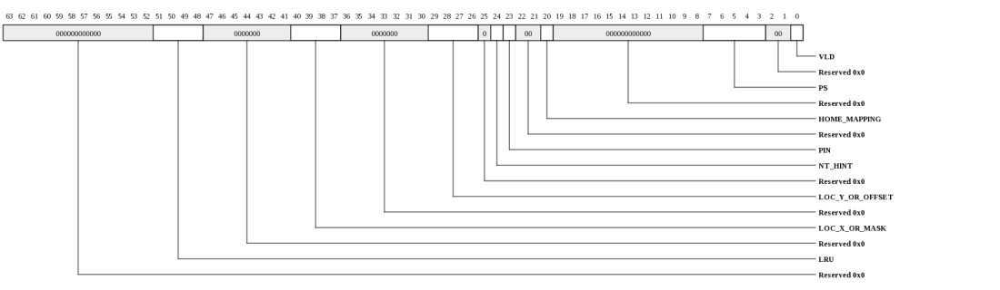
| Bits | Name | Type | Reset | Description
| 51:48 | LRU | RO | 0 | On reads, provides the LRU pointer for the associated ASID. Ignored on writes. | 40:37 | LOC_X_OR_MASK | RW | 0 | X-coordinate of home Tile when page is explicitly homed (HOME_MAPPING = 1). AMT mask when HOME_MAPPING = 0. | 29:26 | LOC_Y_OR_OFFSET | RW | 0 | Y-coordinate of home Tile when page is explicitly homed (HOME_MAPPING = 1). AMT offset when HOME_MAPPING = 0. | 24 | NT_HINT | RW | 0 | NonTemporal Hint. Device services may use this hint as a performance optimization to inform the Tile memory system that the associated data is unlikely to be accessed within a relatively short period of time. Read interfaces may use this hint to invalidate cache data after reading. | 23 | PIN | RW | 0 | When asserted, only the IO pinned ways in the home cache will be used. This attribute only applies to writes. | 20 | HOME_MAPPING | RW | 1 | When 0, physical addresses are hashed to find the home Tile. When 1, an explicit home is stored in LOC_X,LOC_Y. | 7:3 | PS | RW | 1eh | Page size. Size is 2^(PS+12) so 0=4 kB, 1=8 kB, 2=16 kB ... 30=4096 GB. The max supported page size is 30. | 0 | VLD | RW | HW | Entry valid bit. Resets to 1 for the first entry in each ASID. Resets to 0 for all other entries. Clears whenever the associated entry's TLB_ENTRY_ADDR register is written. | |
|---|
Copyright © 2014 Tilera® Corporation. All rights reserved. Printed in the United States of America.
No part of this book may be reproduced, stored in a retrieval system, or transmitted in any form or by any means, electronic, mechanical, photocopying, recording, or otherwise, except as may be expressly permitted by the applicable copyright statutes or in writing by the Publisher.
The following are registered trademarks of Tilera Corporation: Tilera and the Tilera logo. The following are trademarks of Tilera Corporation: Embedding Multicore, The Multicore Company, Tile Processor, TILE Architecture, TILE64, TILEPro, TILEPro36, TILEPro64, TILExpress, TILExpress-64, TILExpressPro-64, TILExpress-20G, TILExpressPro-20G, TILExpressPro-22G, iMesh, TileDirect, TILEmpower, TILEmpower-Gx, TILEncore, TILEncorePro, TILEncore-Gx, TILE-Gx, TILE-Gx16, TILE-Gx36, TILE-Gx64, TILE-Gx100, TILE-Gx3000, TILE-Gx5000, TILE-Gx8000, DDC (Dynamic Distributed Cache), Multicore Development Environment, Gentle Slope Programming, iLib, TMC (Tilera Multicore Components), hardwall, Zero Overhead Linux (ZOL), MiCA (Multicore iMesh Coprocessing Accelerator), and mPIPE (multicore Programmable Intelligent Packet Engine). All other trademarks and/or registered trademarks are the property of their respective owners.
Third-party software: The Tilera IDE makes use of the BeanShell scripting library. Source code for the BeanShell library can be found at the BeanShell website (http://www.beanshell.org/developer.html).
The following is a trademark of Marvell Semiconductor, Inc.: Distributed Switching Architecture (DSA).
This document contains advance information on Tilera products that are in development, sampling or initial production phases. This information and specifications contained herein are subject to change without notice at the discretion of Tilera Corporation.
No license, express or implied by estoppels or otherwise, to any intellectual property is granted by this document. Tilera disclaims any express or implied warranty relating to the sale and/or use of Tilera products, including liability or warranties relating to fitness for a particular purpose, merchantability or infringement of any patent, copyright or other intellectual property right.
Products described in this document are NOT intended for use in medical, life support, or other hazardous uses where malfunction could result in death or bodily injury.
THE INFORMATION CONTAINED IN THIS DOCUMENT IS PROVIDED ON AN "AS IS" BASIS. Tilera assumes no liability for damages arising directly or indirectly from any use of the information contained in this document.